-
End to End happy flow execution
9:07:30 PM / 00:01:10:754 Pass
End to End happy flow execution
03.06.2024 9:07:30 PM 03.06.2024 9:08:40 PM 00:01:10:754 · #test-id=1PassSearch for doctors using the specified filters and accquire top five resultsPassSearch for doctors using the specified filters and accquire top five resultsGiven user clicks on "Find Doctors"com.practo.stepDefinitions.Hooks.addScreenshot(io.cucumber.java.Scenario)Search for doctors using the specified filters and accquire top five results When user selects location as "Chennai"com.practo.stepDefinitions.Hooks.addScreenshot(io.cucumber.java.Scenario)Search for doctors using the specified filters and accquire top five resultsAnd user inputs "Dentist" in searchcom.practo.stepDefinitions.Hooks.addScreenshot(io.cucumber.java.Scenario)Search for doctors using the specified filters and accquire top five resultsAnd user selects "5+ Years of experience" under Experiencecom.practo.stepDefinitions.Hooks.addScreenshot(io.cucumber.java.Scenario)Search for doctors using the specified filters and accquire top five results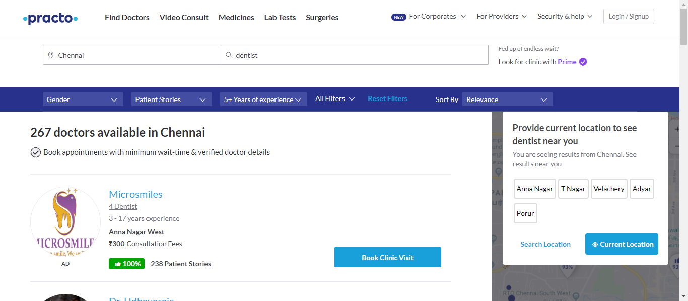And user clicks on All filterscom.practo.stepDefinitions.Hooks.addScreenshot(io.cucumber.java.Scenario)Search for doctors using the specified filters and accquire top five results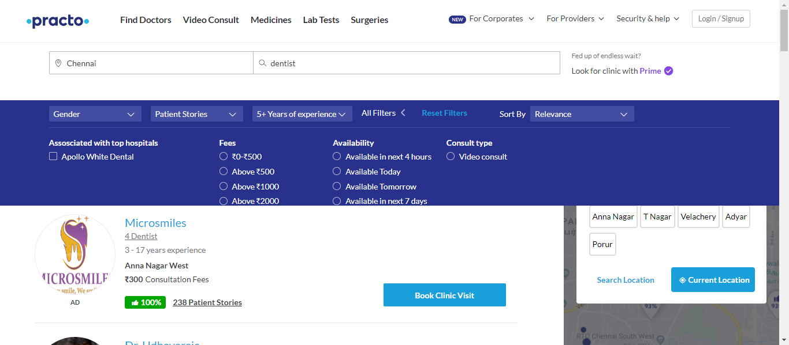And user selects: "Above 500" under feescom.practo.stepDefinitions.Hooks.addScreenshot(io.cucumber.java.Scenario)Search for doctors using the specified filters and accquire top five resultsAnd user filters by patient stories: "80+ Patient Stories"com.practo.stepDefinitions.Hooks.addScreenshot(io.cucumber.java.Scenario)Search for doctors using the specified filters and accquire top five resultsAnd user clicks on All filterscom.practo.stepDefinitions.Hooks.addScreenshot(io.cucumber.java.Scenario)Search for doctors using the specified filters and accquire top five results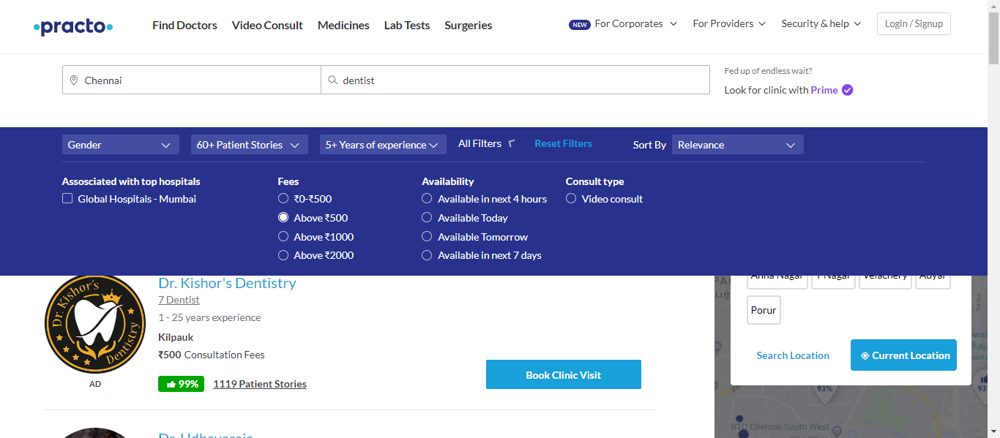And user selects: "Available Tomorrow" under availabilitycom.practo.stepDefinitions.Hooks.addScreenshot(io.cucumber.java.Scenario)Search for doctors using the specified filters and accquire top five results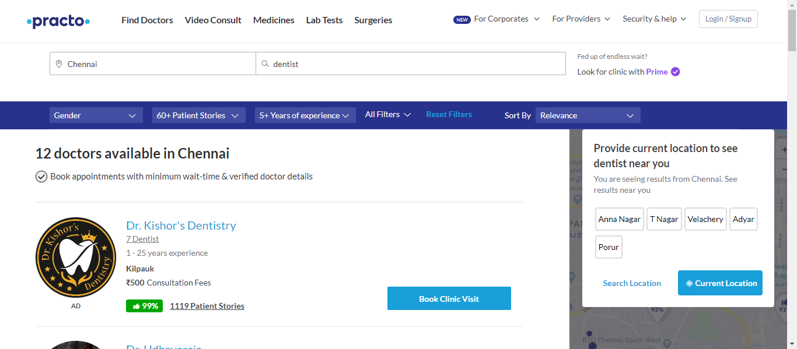And user selects "Number of patient stories - High to low" under sortcom.practo.stepDefinitions.Hooks.addScreenshot(io.cucumber.java.Scenario)Search for doctors using the specified filters and accquire top five results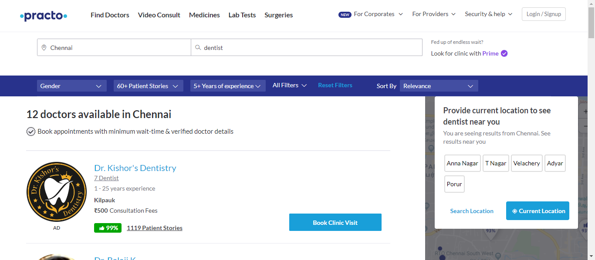Then record top five doctor namescom.practo.stepDefinitions.Hooks.addScreenshot(io.cucumber.java.Scenario)Search for doctors using the specified filters and accquire top five results
When user selects location as "Chennai"com.practo.stepDefinitions.Hooks.addScreenshot(io.cucumber.java.Scenario)Search for doctors using the specified filters and accquire top five resultsAnd user inputs "Dentist" in searchcom.practo.stepDefinitions.Hooks.addScreenshot(io.cucumber.java.Scenario)Search for doctors using the specified filters and accquire top five resultsAnd user selects "5+ Years of experience" under Experiencecom.practo.stepDefinitions.Hooks.addScreenshot(io.cucumber.java.Scenario)Search for doctors using the specified filters and accquire top five results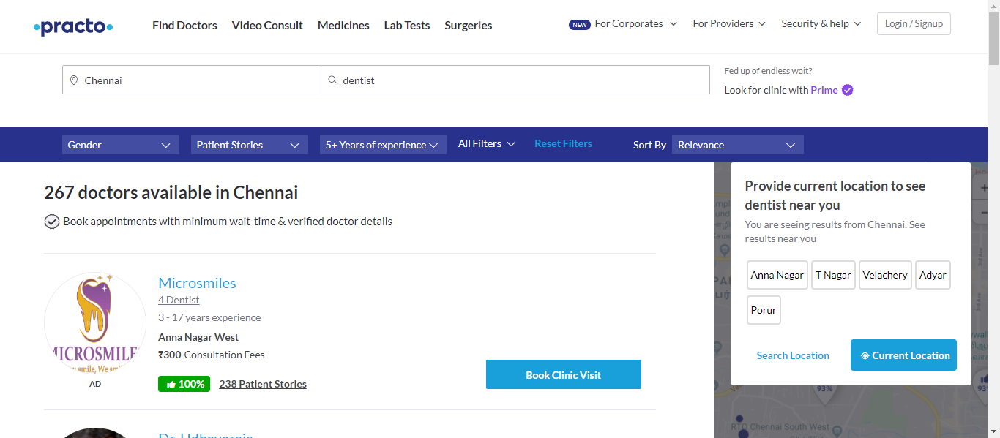And user clicks on All filterscom.practo.stepDefinitions.Hooks.addScreenshot(io.cucumber.java.Scenario)Search for doctors using the specified filters and accquire top five results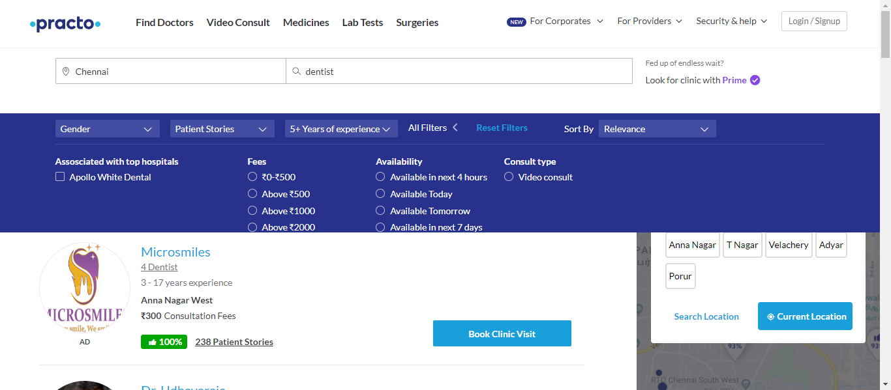And user selects: "Above 500" under feescom.practo.stepDefinitions.Hooks.addScreenshot(io.cucumber.java.Scenario)Search for doctors using the specified filters and accquire top five resultsAnd user filters by patient stories: "80+ Patient Stories"com.practo.stepDefinitions.Hooks.addScreenshot(io.cucumber.java.Scenario)Search for doctors using the specified filters and accquire top five resultsAnd user clicks on All filterscom.practo.stepDefinitions.Hooks.addScreenshot(io.cucumber.java.Scenario)Search for doctors using the specified filters and accquire top five results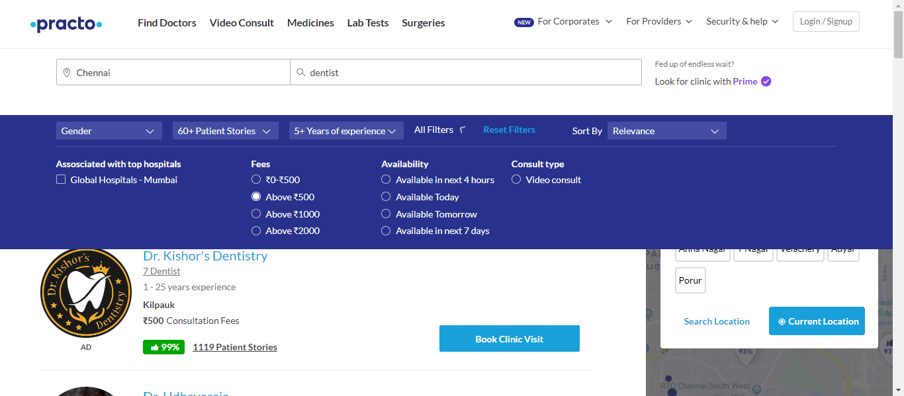And user selects: "Available Tomorrow" under availabilitycom.practo.stepDefinitions.Hooks.addScreenshot(io.cucumber.java.Scenario)Search for doctors using the specified filters and accquire top five results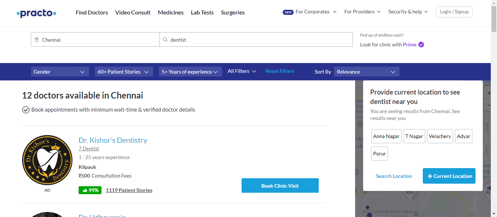And user selects "Number of patient stories - High to low" under sortcom.practo.stepDefinitions.Hooks.addScreenshot(io.cucumber.java.Scenario)Search for doctors using the specified filters and accquire top five results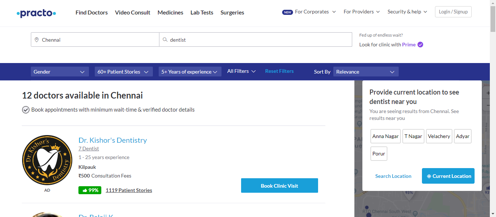Then record top five doctor namescom.practo.stepDefinitions.Hooks.addScreenshot(io.cucumber.java.Scenario)Search for doctors using the specified filters and accquire top five results PassExtract the surgeries listed as Popular Surgeries on the Surgeries pageGiven user navigates to Surgeries from home pagecom.practo.stepDefinitions.Hooks.addScreenshot(io.cucumber.java.Scenario)Extract the surgeries listed as Popular Surgeries on the Surgeries page
PassExtract the surgeries listed as Popular Surgeries on the Surgeries pageGiven user navigates to Surgeries from home pagecom.practo.stepDefinitions.Hooks.addScreenshot(io.cucumber.java.Scenario)Extract the surgeries listed as Popular Surgeries on the Surgeries page When extract surgeries listed under Popular Surgeriescom.practo.stepDefinitions.Hooks.addScreenshot(io.cucumber.java.Scenario)Extract the surgeries listed as Popular Surgeries on the Surgeries page
When extract surgeries listed under Popular Surgeriescom.practo.stepDefinitions.Hooks.addScreenshot(io.cucumber.java.Scenario)Extract the surgeries listed as Popular Surgeries on the Surgeries page And display them in console outputcom.practo.stepDefinitions.Hooks.addScreenshot(io.cucumber.java.Scenario)Extract the surgeries listed as Popular Surgeries on the Surgeries page
And display them in console outputcom.practo.stepDefinitions.Hooks.addScreenshot(io.cucumber.java.Scenario)Extract the surgeries listed as Popular Surgeries on the Surgeries page Passverify form submission with correct details by capturing Thank You message on the Health and Wellness pagePassverify form submission with correct details by capturing Thank You message on the Health and Wellness pageGiven user navigates to Health and Wellness Plan pagecom.practo.stepDefinitions.Hooks.addScreenshot(io.cucumber.java.Scenario)verify form submission with correct details by capturing Thank You message on the Health and Wellness page
Passverify form submission with correct details by capturing Thank You message on the Health and Wellness pagePassverify form submission with correct details by capturing Thank You message on the Health and Wellness pageGiven user navigates to Health and Wellness Plan pagecom.practo.stepDefinitions.Hooks.addScreenshot(io.cucumber.java.Scenario)verify form submission with correct details by capturing Thank You message on the Health and Wellness page When user inputs "Vishal" in namecom.practo.stepDefinitions.Hooks.addScreenshot(io.cucumber.java.Scenario)verify form submission with correct details by capturing Thank You message on the Health and Wellness page
When user inputs "Vishal" in namecom.practo.stepDefinitions.Hooks.addScreenshot(io.cucumber.java.Scenario)verify form submission with correct details by capturing Thank You message on the Health and Wellness page And user inputs "DemoOrg" in organization namecom.practo.stepDefinitions.Hooks.addScreenshot(io.cucumber.java.Scenario)verify form submission with correct details by capturing Thank You message on the Health and Wellness page
And user inputs "DemoOrg" in organization namecom.practo.stepDefinitions.Hooks.addScreenshot(io.cucumber.java.Scenario)verify form submission with correct details by capturing Thank You message on the Health and Wellness page And user inputs "9876543210" in Contact Numbercom.practo.stepDefinitions.Hooks.addScreenshot(io.cucumber.java.Scenario)verify form submission with correct details by capturing Thank You message on the Health and Wellness pageAnd user inputs "name@website" in Official Email IDcom.practo.stepDefinitions.Hooks.addScreenshot(io.cucumber.java.Scenario)verify form submission with correct details by capturing Thank You message on the Health and Wellness pageAnd user selects Organization size: "<500"com.practo.stepDefinitions.Hooks.addScreenshot(io.cucumber.java.Scenario)verify form submission with correct details by capturing Thank You message on the Health and Wellness pageAnd user selects "Taking a demo" in Interested incom.practo.stepDefinitions.Hooks.addScreenshot(io.cucumber.java.Scenario)verify form submission with correct details by capturing Thank You message on the Health and Wellness page
And user inputs "9876543210" in Contact Numbercom.practo.stepDefinitions.Hooks.addScreenshot(io.cucumber.java.Scenario)verify form submission with correct details by capturing Thank You message on the Health and Wellness pageAnd user inputs "name@website" in Official Email IDcom.practo.stepDefinitions.Hooks.addScreenshot(io.cucumber.java.Scenario)verify form submission with correct details by capturing Thank You message on the Health and Wellness pageAnd user selects Organization size: "<500"com.practo.stepDefinitions.Hooks.addScreenshot(io.cucumber.java.Scenario)verify form submission with correct details by capturing Thank You message on the Health and Wellness pageAnd user selects "Taking a demo" in Interested incom.practo.stepDefinitions.Hooks.addScreenshot(io.cucumber.java.Scenario)verify form submission with correct details by capturing Thank You message on the Health and Wellness page And verify Schedule a demo button is disabledcom.practo.stepDefinitions.Hooks.addScreenshot(io.cucumber.java.Scenario)verify form submission with correct details by capturing Thank You message on the Health and Wellness pageAnd user inputs "name@website.com" in Official Email IDcom.practo.stepDefinitions.Hooks.addScreenshot(io.cucumber.java.Scenario)verify form submission with correct details by capturing Thank You message on the Health and Wellness pageAnd user clicks Schedule a demo buttoncom.practo.stepDefinitions.Hooks.addScreenshot(io.cucumber.java.Scenario)verify form submission with correct details by capturing Thank You message on the Health and Wellness pageThen capture thank you messagecom.practo.stepDefinitions.Hooks.addScreenshot(io.cucumber.java.Scenario)verify form submission with correct details by capturing Thank You message on the Health and Wellness page
And verify Schedule a demo button is disabledcom.practo.stepDefinitions.Hooks.addScreenshot(io.cucumber.java.Scenario)verify form submission with correct details by capturing Thank You message on the Health and Wellness pageAnd user inputs "name@website.com" in Official Email IDcom.practo.stepDefinitions.Hooks.addScreenshot(io.cucumber.java.Scenario)verify form submission with correct details by capturing Thank You message on the Health and Wellness pageAnd user clicks Schedule a demo buttoncom.practo.stepDefinitions.Hooks.addScreenshot(io.cucumber.java.Scenario)verify form submission with correct details by capturing Thank You message on the Health and Wellness pageThen capture thank you messagecom.practo.stepDefinitions.Hooks.addScreenshot(io.cucumber.java.Scenario)verify form submission with correct details by capturing Thank You message on the Health and Wellness page -
Health and Wellness
9:08:40 PM / 00:01:01:856 Pass
Health and Wellness
03.06.2024 9:08:40 PM 03.06.2024 9:09:42 PM 00:01:01:856 · #test-id=63Passverify Schedule a demo scroll-to-top navigation button on the Health and Wellness PageGiven user navigates to Health and Wellness Plan pagecom.practo.stepDefinitions.Hooks.addScreenshot(io.cucumber.java.Scenario)verify Schedule a demo scroll-to-top navigation button on the Health and Wellness Page When user scrolls down to the bottom of the pagecom.practo.stepDefinitions.Hooks.addScreenshot(io.cucumber.java.Scenario)verify Schedule a demo scroll-to-top navigation button on the Health and Wellness Page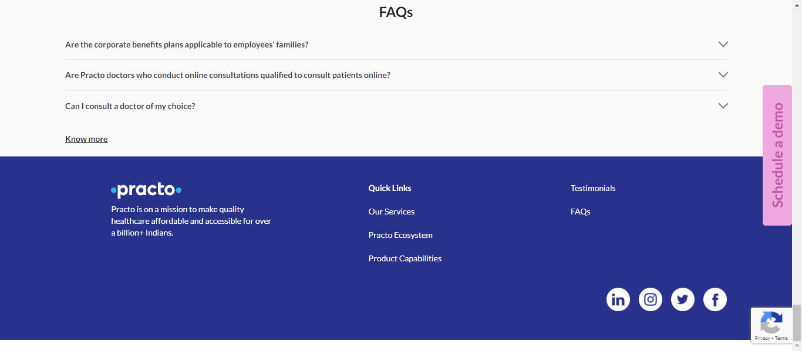And user clicks the Schedule a demo buttoncom.practo.stepDefinitions.Hooks.addScreenshot(io.cucumber.java.Scenario)verify Schedule a demo scroll-to-top navigation button on the Health and Wellness Page
When user scrolls down to the bottom of the pagecom.practo.stepDefinitions.Hooks.addScreenshot(io.cucumber.java.Scenario)verify Schedule a demo scroll-to-top navigation button on the Health and Wellness Page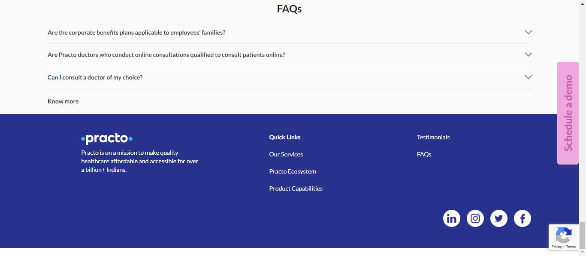And user clicks the Schedule a demo buttoncom.practo.stepDefinitions.Hooks.addScreenshot(io.cucumber.java.Scenario)verify Schedule a demo scroll-to-top navigation button on the Health and Wellness Page Then verify the page is scrolled up to the topcom.practo.stepDefinitions.Hooks.addScreenshot(io.cucumber.java.Scenario)verify Schedule a demo scroll-to-top navigation button on the Health and Wellness PagePassverify if the submit button is disabled with incorrect details on the Health and Wellness PagePassverify if the submit button is disabled with incorrect details on the Health and Wellness PageGiven user navigates to Health and Wellness Plan pagecom.practo.stepDefinitions.Hooks.addScreenshot(io.cucumber.java.Scenario)verify if the submit button is disabled with incorrect details on the Health and Wellness Page
Then verify the page is scrolled up to the topcom.practo.stepDefinitions.Hooks.addScreenshot(io.cucumber.java.Scenario)verify Schedule a demo scroll-to-top navigation button on the Health and Wellness PagePassverify if the submit button is disabled with incorrect details on the Health and Wellness PagePassverify if the submit button is disabled with incorrect details on the Health and Wellness PageGiven user navigates to Health and Wellness Plan pagecom.practo.stepDefinitions.Hooks.addScreenshot(io.cucumber.java.Scenario)verify if the submit button is disabled with incorrect details on the Health and Wellness Page When user inputs "Vardhan" in namecom.practo.stepDefinitions.Hooks.addScreenshot(io.cucumber.java.Scenario)verify if the submit button is disabled with incorrect details on the Health and Wellness PageAnd user inputs "DemoOrg" in organization namecom.practo.stepDefinitions.Hooks.addScreenshot(io.cucumber.java.Scenario)verify if the submit button is disabled with incorrect details on the Health and Wellness PageAnd user inputs "9876543310" in Contact Numbercom.practo.stepDefinitions.Hooks.addScreenshot(io.cucumber.java.Scenario)verify if the submit button is disabled with incorrect details on the Health and Wellness Page
When user inputs "Vardhan" in namecom.practo.stepDefinitions.Hooks.addScreenshot(io.cucumber.java.Scenario)verify if the submit button is disabled with incorrect details on the Health and Wellness PageAnd user inputs "DemoOrg" in organization namecom.practo.stepDefinitions.Hooks.addScreenshot(io.cucumber.java.Scenario)verify if the submit button is disabled with incorrect details on the Health and Wellness PageAnd user inputs "9876543310" in Contact Numbercom.practo.stepDefinitions.Hooks.addScreenshot(io.cucumber.java.Scenario)verify if the submit button is disabled with incorrect details on the Health and Wellness Page And user inputs "name@website" in Official Email IDcom.practo.stepDefinitions.Hooks.addScreenshot(io.cucumber.java.Scenario)verify if the submit button is disabled with incorrect details on the Health and Wellness PageAnd user selects Organization size: "<500"com.practo.stepDefinitions.Hooks.addScreenshot(io.cucumber.java.Scenario)verify if the submit button is disabled with incorrect details on the Health and Wellness PageAnd user selects "Taking a demo" in Interested incom.practo.stepDefinitions.Hooks.addScreenshot(io.cucumber.java.Scenario)verify if the submit button is disabled with incorrect details on the Health and Wellness PageThen verify Schedule a demo button is disabledcom.practo.stepDefinitions.Hooks.addScreenshot(io.cucumber.java.Scenario)verify if the submit button is disabled with incorrect details on the Health and Wellness Page
And user inputs "name@website" in Official Email IDcom.practo.stepDefinitions.Hooks.addScreenshot(io.cucumber.java.Scenario)verify if the submit button is disabled with incorrect details on the Health and Wellness PageAnd user selects Organization size: "<500"com.practo.stepDefinitions.Hooks.addScreenshot(io.cucumber.java.Scenario)verify if the submit button is disabled with incorrect details on the Health and Wellness PageAnd user selects "Taking a demo" in Interested incom.practo.stepDefinitions.Hooks.addScreenshot(io.cucumber.java.Scenario)verify if the submit button is disabled with incorrect details on the Health and Wellness PageThen verify Schedule a demo button is disabledcom.practo.stepDefinitions.Hooks.addScreenshot(io.cucumber.java.Scenario)verify if the submit button is disabled with incorrect details on the Health and Wellness Page Passverify if the submit button is disabled with incorrect details on the Health and Wellness PageGiven user navigates to Health and Wellness Plan pagecom.practo.stepDefinitions.Hooks.addScreenshot(io.cucumber.java.Scenario)verify if the submit button is disabled with incorrect details on the Health and Wellness PageWhen user inputs "Vishal A" in namecom.practo.stepDefinitions.Hooks.addScreenshot(io.cucumber.java.Scenario)verify if the submit button is disabled with incorrect details on the Health and Wellness PageAnd user inputs "Demo Org" in organization namecom.practo.stepDefinitions.Hooks.addScreenshot(io.cucumber.java.Scenario)verify if the submit button is disabled with incorrect details on the Health and Wellness PageAnd user inputs "9876553210" in Contact Numbercom.practo.stepDefinitions.Hooks.addScreenshot(io.cucumber.java.Scenario)verify if the submit button is disabled with incorrect details on the Health and Wellness PageAnd user inputs "name@site.com" in Official Email IDcom.practo.stepDefinitions.Hooks.addScreenshot(io.cucumber.java.Scenario)verify if the submit button is disabled with incorrect details on the Health and Wellness PageAnd user selects Organization size: "5001-10000"com.practo.stepDefinitions.Hooks.addScreenshot(io.cucumber.java.Scenario)verify if the submit button is disabled with incorrect details on the Health and Wellness Page
Passverify if the submit button is disabled with incorrect details on the Health and Wellness PageGiven user navigates to Health and Wellness Plan pagecom.practo.stepDefinitions.Hooks.addScreenshot(io.cucumber.java.Scenario)verify if the submit button is disabled with incorrect details on the Health and Wellness PageWhen user inputs "Vishal A" in namecom.practo.stepDefinitions.Hooks.addScreenshot(io.cucumber.java.Scenario)verify if the submit button is disabled with incorrect details on the Health and Wellness PageAnd user inputs "Demo Org" in organization namecom.practo.stepDefinitions.Hooks.addScreenshot(io.cucumber.java.Scenario)verify if the submit button is disabled with incorrect details on the Health and Wellness PageAnd user inputs "9876553210" in Contact Numbercom.practo.stepDefinitions.Hooks.addScreenshot(io.cucumber.java.Scenario)verify if the submit button is disabled with incorrect details on the Health and Wellness PageAnd user inputs "name@site.com" in Official Email IDcom.practo.stepDefinitions.Hooks.addScreenshot(io.cucumber.java.Scenario)verify if the submit button is disabled with incorrect details on the Health and Wellness PageAnd user selects Organization size: "5001-10000"com.practo.stepDefinitions.Hooks.addScreenshot(io.cucumber.java.Scenario)verify if the submit button is disabled with incorrect details on the Health and Wellness Page And user selects "" in Interested incom.practo.stepDefinitions.Hooks.addScreenshot(io.cucumber.java.Scenario)verify if the submit button is disabled with incorrect details on the Health and Wellness PageThen verify Schedule a demo button is disabledcom.practo.stepDefinitions.Hooks.addScreenshot(io.cucumber.java.Scenario)verify if the submit button is disabled with incorrect details on the Health and Wellness Page
And user selects "" in Interested incom.practo.stepDefinitions.Hooks.addScreenshot(io.cucumber.java.Scenario)verify if the submit button is disabled with incorrect details on the Health and Wellness PageThen verify Schedule a demo button is disabledcom.practo.stepDefinitions.Hooks.addScreenshot(io.cucumber.java.Scenario)verify if the submit button is disabled with incorrect details on the Health and Wellness Page Passverify if submit button enabled with correct details on the Health and Wellness Plan pagePassverify if submit button enabled with correct details on the Health and Wellness Plan pageGiven user navigates to Health and Wellness Plan pagecom.practo.stepDefinitions.Hooks.addScreenshot(io.cucumber.java.Scenario)verify if submit button enabled with correct details on the Health and Wellness Plan page
Passverify if submit button enabled with correct details on the Health and Wellness Plan pagePassverify if submit button enabled with correct details on the Health and Wellness Plan pageGiven user navigates to Health and Wellness Plan pagecom.practo.stepDefinitions.Hooks.addScreenshot(io.cucumber.java.Scenario)verify if submit button enabled with correct details on the Health and Wellness Plan page When user inputs "Vishal" in namecom.practo.stepDefinitions.Hooks.addScreenshot(io.cucumber.java.Scenario)verify if submit button enabled with correct details on the Health and Wellness Plan pageAnd user inputs "DemoOrg" in organization namecom.practo.stepDefinitions.Hooks.addScreenshot(io.cucumber.java.Scenario)verify if submit button enabled with correct details on the Health and Wellness Plan pageAnd user inputs "9876543210" in Contact Numbercom.practo.stepDefinitions.Hooks.addScreenshot(io.cucumber.java.Scenario)verify if submit button enabled with correct details on the Health and Wellness Plan page
When user inputs "Vishal" in namecom.practo.stepDefinitions.Hooks.addScreenshot(io.cucumber.java.Scenario)verify if submit button enabled with correct details on the Health and Wellness Plan pageAnd user inputs "DemoOrg" in organization namecom.practo.stepDefinitions.Hooks.addScreenshot(io.cucumber.java.Scenario)verify if submit button enabled with correct details on the Health and Wellness Plan pageAnd user inputs "9876543210" in Contact Numbercom.practo.stepDefinitions.Hooks.addScreenshot(io.cucumber.java.Scenario)verify if submit button enabled with correct details on the Health and Wellness Plan page And user inputs "name@website.com" in Official Email IDcom.practo.stepDefinitions.Hooks.addScreenshot(io.cucumber.java.Scenario)verify if submit button enabled with correct details on the Health and Wellness Plan pageAnd user selects Organization size: "501-1000"com.practo.stepDefinitions.Hooks.addScreenshot(io.cucumber.java.Scenario)verify if submit button enabled with correct details on the Health and Wellness Plan pageAnd user selects "Taking a demo" in Interested incom.practo.stepDefinitions.Hooks.addScreenshot(io.cucumber.java.Scenario)verify if submit button enabled with correct details on the Health and Wellness Plan pageThen verify Schedule a demo button is enabledcom.practo.stepDefinitions.Hooks.addScreenshot(io.cucumber.java.Scenario)verify if submit button enabled with correct details on the Health and Wellness Plan page
And user inputs "name@website.com" in Official Email IDcom.practo.stepDefinitions.Hooks.addScreenshot(io.cucumber.java.Scenario)verify if submit button enabled with correct details on the Health and Wellness Plan pageAnd user selects Organization size: "501-1000"com.practo.stepDefinitions.Hooks.addScreenshot(io.cucumber.java.Scenario)verify if submit button enabled with correct details on the Health and Wellness Plan pageAnd user selects "Taking a demo" in Interested incom.practo.stepDefinitions.Hooks.addScreenshot(io.cucumber.java.Scenario)verify if submit button enabled with correct details on the Health and Wellness Plan pageThen verify Schedule a demo button is enabledcom.practo.stepDefinitions.Hooks.addScreenshot(io.cucumber.java.Scenario)verify if submit button enabled with correct details on the Health and Wellness Plan page
-
Home Page
9:09:42 PM / 00:00:35:432 Pass
Home Page
03.06.2024 9:09:42 PM 03.06.2024 9:10:18 PM 00:00:35:432 · #test-id=134PassVerify navigation items on the Home PagePassVerify navigation items on the Home PageGiven user opens practo home pagecom.practo.stepDefinitions.Hooks.addScreenshot(io.cucumber.java.Scenario)Verify navigation items on the Home Page When user clicks on "Find Doctors"com.practo.stepDefinitions.Hooks.addScreenshot(io.cucumber.java.Scenario)Verify navigation items on the Home Page
When user clicks on "Find Doctors"com.practo.stepDefinitions.Hooks.addScreenshot(io.cucumber.java.Scenario)Verify navigation items on the Home Page Then verify page title "Practo | Book Doctor Appointments Online, Order Medicine, Diagnostic Tests, Consult"com.practo.stepDefinitions.Hooks.addScreenshot(io.cucumber.java.Scenario)Verify navigation items on the Home Page
Then verify page title "Practo | Book Doctor Appointments Online, Order Medicine, Diagnostic Tests, Consult"com.practo.stepDefinitions.Hooks.addScreenshot(io.cucumber.java.Scenario)Verify navigation items on the Home Page PassVerify navigation items on the Home PageGiven user opens practo home pagecom.practo.stepDefinitions.Hooks.addScreenshot(io.cucumber.java.Scenario)Verify navigation items on the Home Page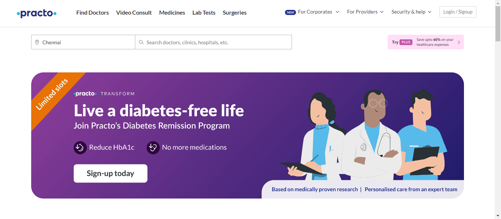When user clicks on "Video Consult"com.practo.stepDefinitions.Hooks.addScreenshot(io.cucumber.java.Scenario)Verify navigation items on the Home PageThen verify page title "Online Doctor Consultation | Ask Top Doctor's Advice 24*7 | Practo"com.practo.stepDefinitions.Hooks.addScreenshot(io.cucumber.java.Scenario)Verify navigation items on the Home Page
PassVerify navigation items on the Home PageGiven user opens practo home pagecom.practo.stepDefinitions.Hooks.addScreenshot(io.cucumber.java.Scenario)Verify navigation items on the Home Page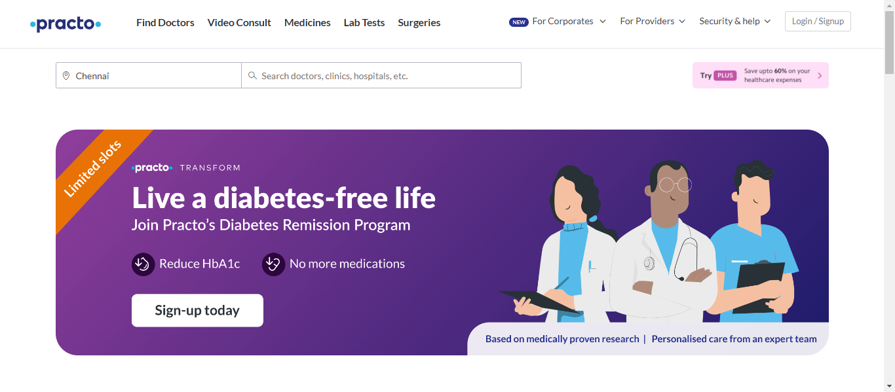When user clicks on "Video Consult"com.practo.stepDefinitions.Hooks.addScreenshot(io.cucumber.java.Scenario)Verify navigation items on the Home PageThen verify page title "Online Doctor Consultation | Ask Top Doctor's Advice 24*7 | Practo"com.practo.stepDefinitions.Hooks.addScreenshot(io.cucumber.java.Scenario)Verify navigation items on the Home Page PassVerify navigation items on the Home PageGiven user opens practo home pagecom.practo.stepDefinitions.Hooks.addScreenshot(io.cucumber.java.Scenario)Verify navigation items on the Home Page
PassVerify navigation items on the Home PageGiven user opens practo home pagecom.practo.stepDefinitions.Hooks.addScreenshot(io.cucumber.java.Scenario)Verify navigation items on the Home Page When user clicks on "Lab Tests"com.practo.stepDefinitions.Hooks.addScreenshot(io.cucumber.java.Scenario)Verify navigation items on the Home Page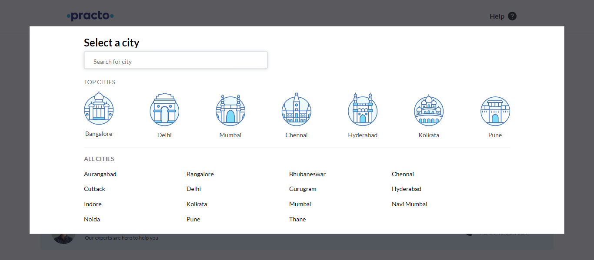Then verify page title "Blood Tests | Book Diagnostic Tests from Home at Best Prices | Practo"com.practo.stepDefinitions.Hooks.addScreenshot(io.cucumber.java.Scenario)Verify navigation items on the Home Page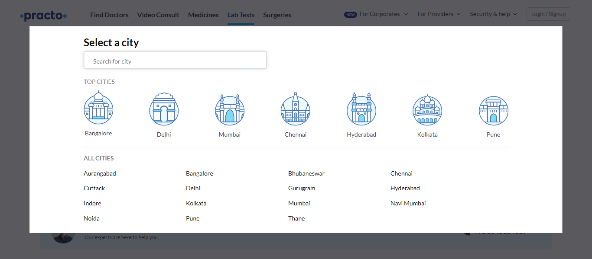
When user clicks on "Lab Tests"com.practo.stepDefinitions.Hooks.addScreenshot(io.cucumber.java.Scenario)Verify navigation items on the Home Page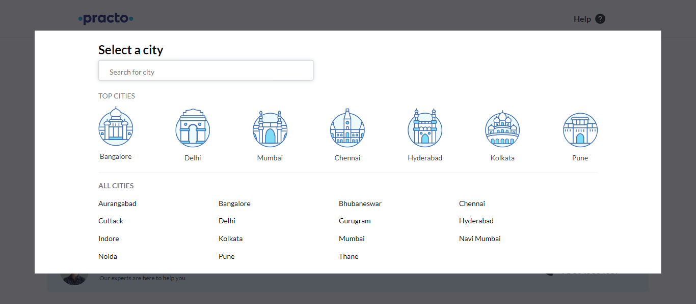Then verify page title "Blood Tests | Book Diagnostic Tests from Home at Best Prices | Practo"com.practo.stepDefinitions.Hooks.addScreenshot(io.cucumber.java.Scenario)Verify navigation items on the Home Page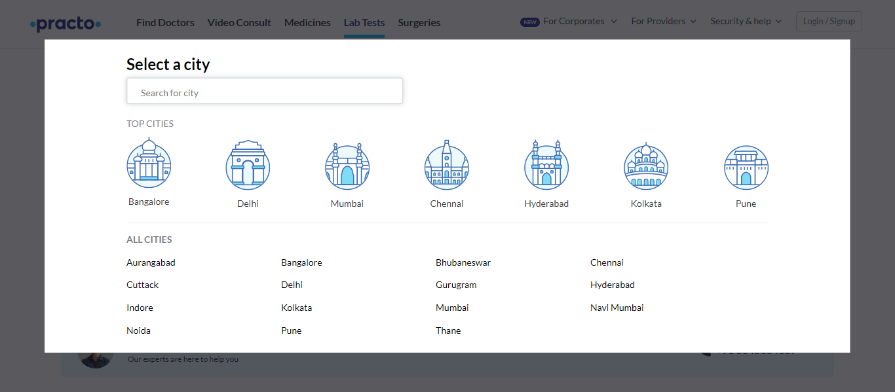 -
Search
9:10:18 PM / 00:01:54:704 Pass
Search
03.06.2024 9:10:18 PM 03.06.2024 9:12:12 PM 00:01:54:704 · #test-id=163PassFilter doctors by patient stories on the Search pagePassFilter doctors by patient stories on the Search pageGiven user clicks on "Find Doctors"com.practo.stepDefinitions.Hooks.addScreenshot(io.cucumber.java.Scenario)Filter doctors by patient stories on the Search page When user selects location as "Chennai"com.practo.stepDefinitions.Hooks.addScreenshot(io.cucumber.java.Scenario)Filter doctors by patient stories on the Search page
When user selects location as "Chennai"com.practo.stepDefinitions.Hooks.addScreenshot(io.cucumber.java.Scenario)Filter doctors by patient stories on the Search page And user inputs "Dentist" in searchcom.practo.stepDefinitions.Hooks.addScreenshot(io.cucumber.java.Scenario)Filter doctors by patient stories on the Search page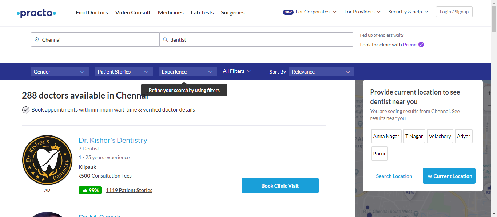And fetch the number of doctors displayedcom.practo.stepDefinitions.Hooks.addScreenshot(io.cucumber.java.Scenario)Filter doctors by patient stories on the Search page
And user inputs "Dentist" in searchcom.practo.stepDefinitions.Hooks.addScreenshot(io.cucumber.java.Scenario)Filter doctors by patient stories on the Search page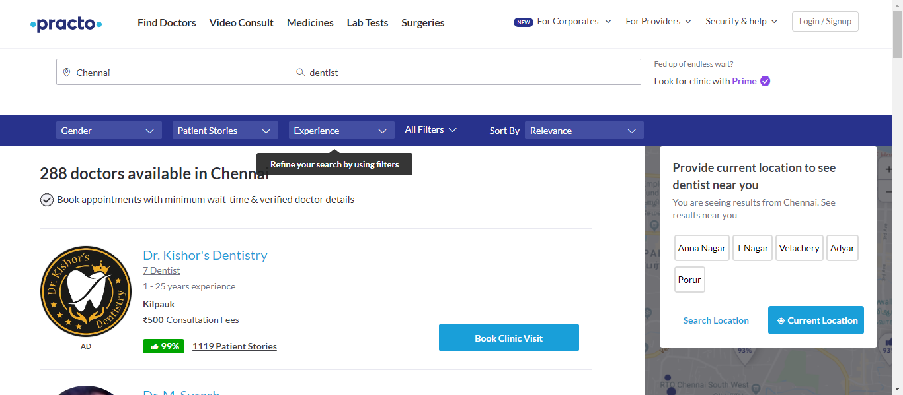And fetch the number of doctors displayedcom.practo.stepDefinitions.Hooks.addScreenshot(io.cucumber.java.Scenario)Filter doctors by patient stories on the Search page And user filters by patient stories: "80+ Patient Stories"com.practo.stepDefinitions.Hooks.addScreenshot(io.cucumber.java.Scenario)Filter doctors by patient stories on the Search page
And user filters by patient stories: "80+ Patient Stories"com.practo.stepDefinitions.Hooks.addScreenshot(io.cucumber.java.Scenario)Filter doctors by patient stories on the Search page Then verify the number of doctors is changedcom.practo.stepDefinitions.Hooks.addScreenshot(io.cucumber.java.Scenario)Filter doctors by patient stories on the Search page
Then verify the number of doctors is changedcom.practo.stepDefinitions.Hooks.addScreenshot(io.cucumber.java.Scenario)Filter doctors by patient stories on the Search page PassFilter doctors by fees on the Search pagePassFilter doctors by fees on the Search pageGiven user clicks on "Find Doctors"com.practo.stepDefinitions.Hooks.addScreenshot(io.cucumber.java.Scenario)Filter doctors by fees on the Search page
PassFilter doctors by fees on the Search pagePassFilter doctors by fees on the Search pageGiven user clicks on "Find Doctors"com.practo.stepDefinitions.Hooks.addScreenshot(io.cucumber.java.Scenario)Filter doctors by fees on the Search page When user selects location as "Chennai"com.practo.stepDefinitions.Hooks.addScreenshot(io.cucumber.java.Scenario)Filter doctors by fees on the Search page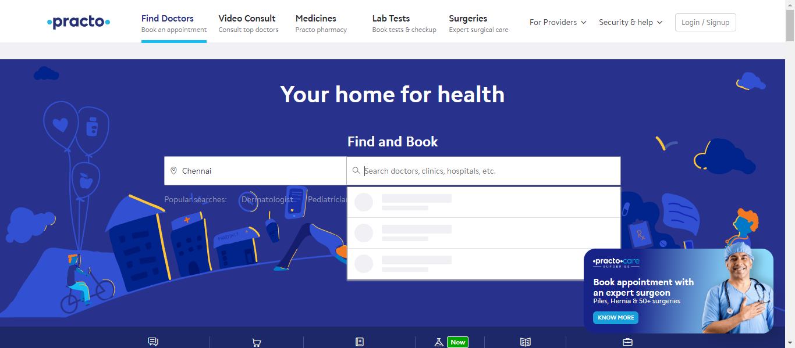And user inputs "Dentist" in searchcom.practo.stepDefinitions.Hooks.addScreenshot(io.cucumber.java.Scenario)Filter doctors by fees on the Search page
When user selects location as "Chennai"com.practo.stepDefinitions.Hooks.addScreenshot(io.cucumber.java.Scenario)Filter doctors by fees on the Search page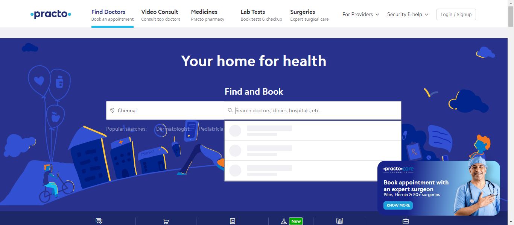And user inputs "Dentist" in searchcom.practo.stepDefinitions.Hooks.addScreenshot(io.cucumber.java.Scenario)Filter doctors by fees on the Search page And user clicks on All filterscom.practo.stepDefinitions.Hooks.addScreenshot(io.cucumber.java.Scenario)Filter doctors by fees on the Search page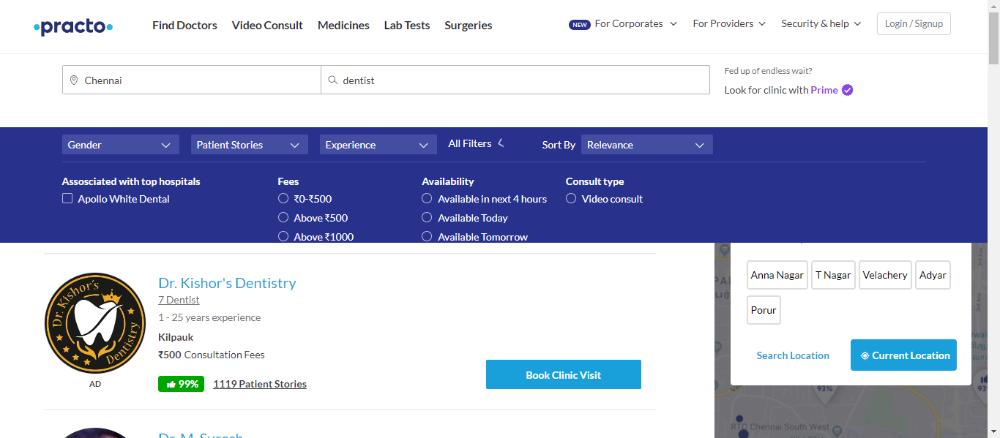And user selects: "Above 500" under feescom.practo.stepDefinitions.Hooks.addScreenshot(io.cucumber.java.Scenario)Filter doctors by fees on the Search page
And user clicks on All filterscom.practo.stepDefinitions.Hooks.addScreenshot(io.cucumber.java.Scenario)Filter doctors by fees on the Search page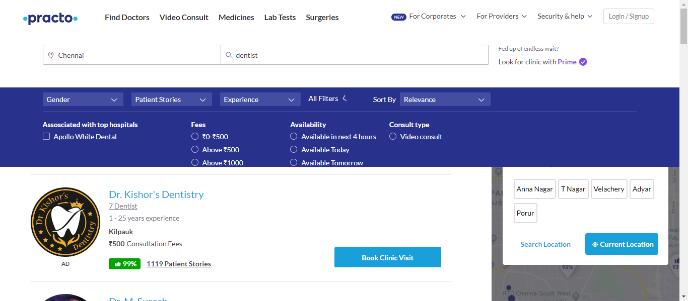And user selects: "Above 500" under feescom.practo.stepDefinitions.Hooks.addScreenshot(io.cucumber.java.Scenario)Filter doctors by fees on the Search page Then verify if the listed doctors have the right fee requirement "Above 500"com.practo.stepDefinitions.Hooks.addScreenshot(io.cucumber.java.Scenario)Filter doctors by fees on the Search page
Then verify if the listed doctors have the right fee requirement "Above 500"com.practo.stepDefinitions.Hooks.addScreenshot(io.cucumber.java.Scenario)Filter doctors by fees on the Search page PassFilter doctors by availability on the Search pagePassFilter doctors by availability on the Search pageGiven user clicks on "Find Doctors"com.practo.stepDefinitions.Hooks.addScreenshot(io.cucumber.java.Scenario)Filter doctors by availability on the Search page
PassFilter doctors by availability on the Search pagePassFilter doctors by availability on the Search pageGiven user clicks on "Find Doctors"com.practo.stepDefinitions.Hooks.addScreenshot(io.cucumber.java.Scenario)Filter doctors by availability on the Search page When user selects location as "Chennai"com.practo.stepDefinitions.Hooks.addScreenshot(io.cucumber.java.Scenario)Filter doctors by availability on the Search pageAnd user inputs "Dentist" in searchcom.practo.stepDefinitions.Hooks.addScreenshot(io.cucumber.java.Scenario)Filter doctors by availability on the Search page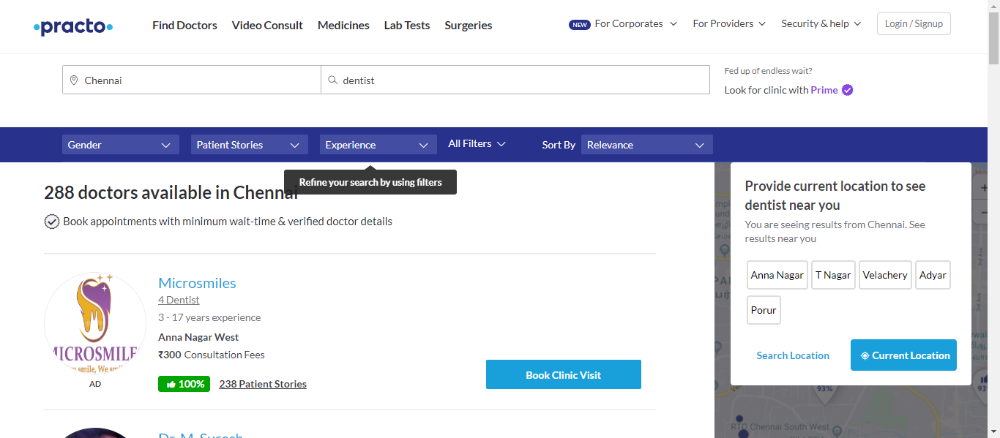And user clicks on All filterscom.practo.stepDefinitions.Hooks.addScreenshot(io.cucumber.java.Scenario)Filter doctors by availability on the Search page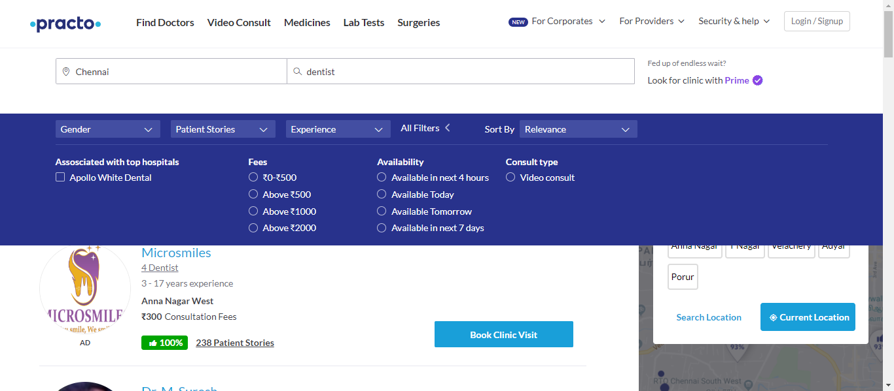And user selects: "Available Tomorrow" under availabilitycom.practo.stepDefinitions.Hooks.addScreenshot(io.cucumber.java.Scenario)Filter doctors by availability on the Search pageThen verify if the availability displayed above book clinic visit matches "Available Tomorrow"com.practo.stepDefinitions.Hooks.addScreenshot(io.cucumber.java.Scenario)Filter doctors by availability on the Search page
When user selects location as "Chennai"com.practo.stepDefinitions.Hooks.addScreenshot(io.cucumber.java.Scenario)Filter doctors by availability on the Search pageAnd user inputs "Dentist" in searchcom.practo.stepDefinitions.Hooks.addScreenshot(io.cucumber.java.Scenario)Filter doctors by availability on the Search page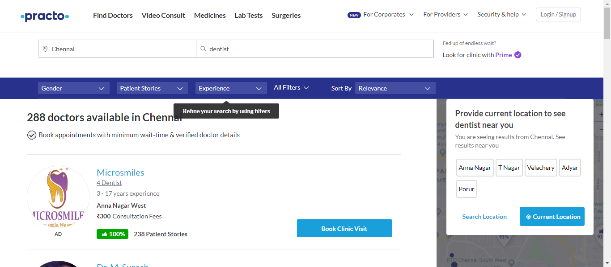And user clicks on All filterscom.practo.stepDefinitions.Hooks.addScreenshot(io.cucumber.java.Scenario)Filter doctors by availability on the Search page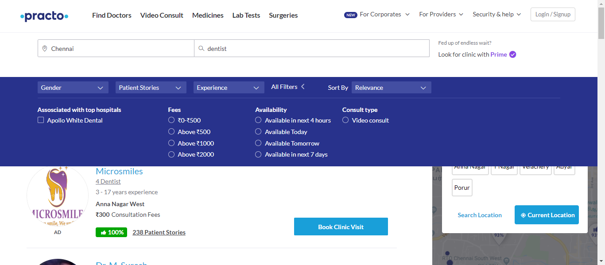And user selects: "Available Tomorrow" under availabilitycom.practo.stepDefinitions.Hooks.addScreenshot(io.cucumber.java.Scenario)Filter doctors by availability on the Search pageThen verify if the availability displayed above book clinic visit matches "Available Tomorrow"com.practo.stepDefinitions.Hooks.addScreenshot(io.cucumber.java.Scenario)Filter doctors by availability on the Search page PassFilter doctors by video consult availability on the Search pagePassFilter doctors by video consult availability on the Search pageGiven user clicks on "Find Doctors"com.practo.stepDefinitions.Hooks.addScreenshot(io.cucumber.java.Scenario)Filter doctors by video consult availability on the Search page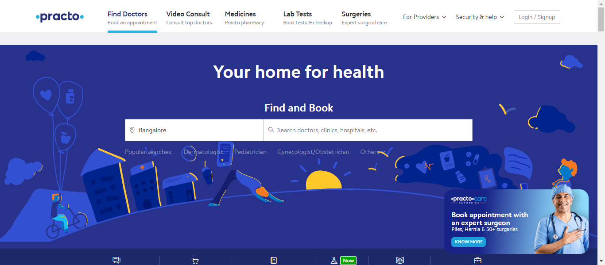When user selects location as "Chennai"com.practo.stepDefinitions.Hooks.addScreenshot(io.cucumber.java.Scenario)Filter doctors by video consult availability on the Search pageAnd user inputs "Dentist" in searchcom.practo.stepDefinitions.Hooks.addScreenshot(io.cucumber.java.Scenario)Filter doctors by video consult availability on the Search pageAnd user clicks on All filterscom.practo.stepDefinitions.Hooks.addScreenshot(io.cucumber.java.Scenario)Filter doctors by video consult availability on the Search pageAnd user selects "Video Consult" under Consult typecom.practo.stepDefinitions.Hooks.addScreenshot(io.cucumber.java.Scenario)Filter doctors by video consult availability on the Search page
PassFilter doctors by video consult availability on the Search pagePassFilter doctors by video consult availability on the Search pageGiven user clicks on "Find Doctors"com.practo.stepDefinitions.Hooks.addScreenshot(io.cucumber.java.Scenario)Filter doctors by video consult availability on the Search page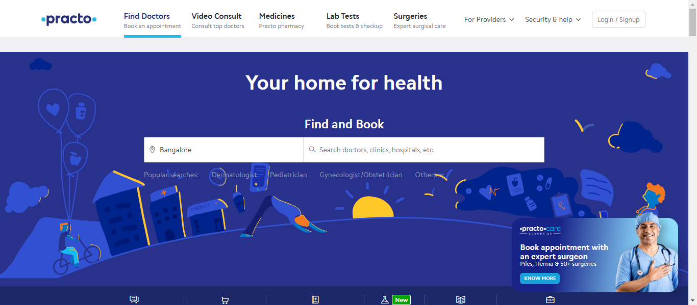When user selects location as "Chennai"com.practo.stepDefinitions.Hooks.addScreenshot(io.cucumber.java.Scenario)Filter doctors by video consult availability on the Search pageAnd user inputs "Dentist" in searchcom.practo.stepDefinitions.Hooks.addScreenshot(io.cucumber.java.Scenario)Filter doctors by video consult availability on the Search pageAnd user clicks on All filterscom.practo.stepDefinitions.Hooks.addScreenshot(io.cucumber.java.Scenario)Filter doctors by video consult availability on the Search pageAnd user selects "Video Consult" under Consult typecom.practo.stepDefinitions.Hooks.addScreenshot(io.cucumber.java.Scenario)Filter doctors by video consult availability on the Search page Then verify if results displayed are of video consultcom.practo.stepDefinitions.Hooks.addScreenshot(io.cucumber.java.Scenario)Filter doctors by video consult availability on the Search page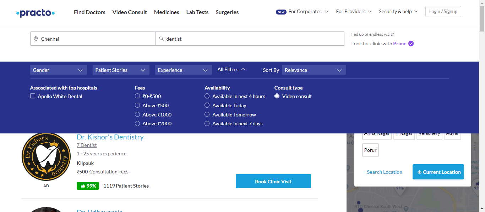PassFilter doctors location in Chennai on the Search pagePassFilter doctors location in Chennai on the Search pageGiven user clicks on "Find Doctors"com.practo.stepDefinitions.Hooks.addScreenshot(io.cucumber.java.Scenario)Filter doctors location in Chennai on the Search page
Then verify if results displayed are of video consultcom.practo.stepDefinitions.Hooks.addScreenshot(io.cucumber.java.Scenario)Filter doctors by video consult availability on the Search page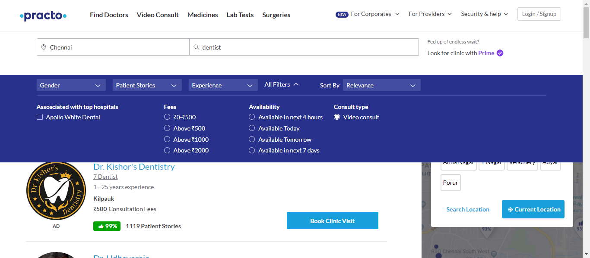PassFilter doctors location in Chennai on the Search pagePassFilter doctors location in Chennai on the Search pageGiven user clicks on "Find Doctors"com.practo.stepDefinitions.Hooks.addScreenshot(io.cucumber.java.Scenario)Filter doctors location in Chennai on the Search page When user selects location as "Chennai"com.practo.stepDefinitions.Hooks.addScreenshot(io.cucumber.java.Scenario)Filter doctors location in Chennai on the Search page
When user selects location as "Chennai"com.practo.stepDefinitions.Hooks.addScreenshot(io.cucumber.java.Scenario)Filter doctors location in Chennai on the Search page And user inputs "Dentist" in searchcom.practo.stepDefinitions.Hooks.addScreenshot(io.cucumber.java.Scenario)Filter doctors location in Chennai on the Search page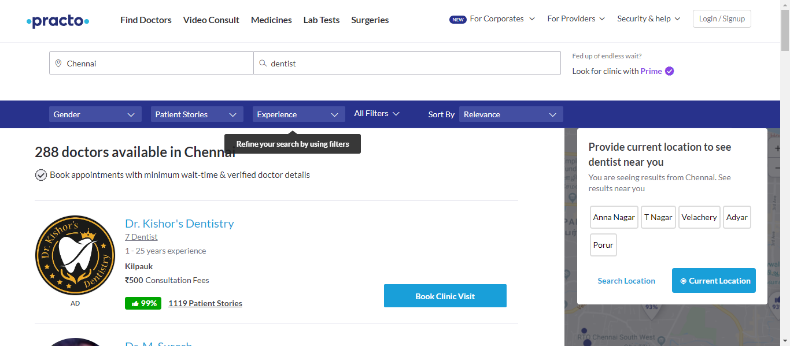And user clicks "Anna Nagar" under locationcom.practo.stepDefinitions.Hooks.addScreenshot(io.cucumber.java.Scenario)Filter doctors location in Chennai on the Search page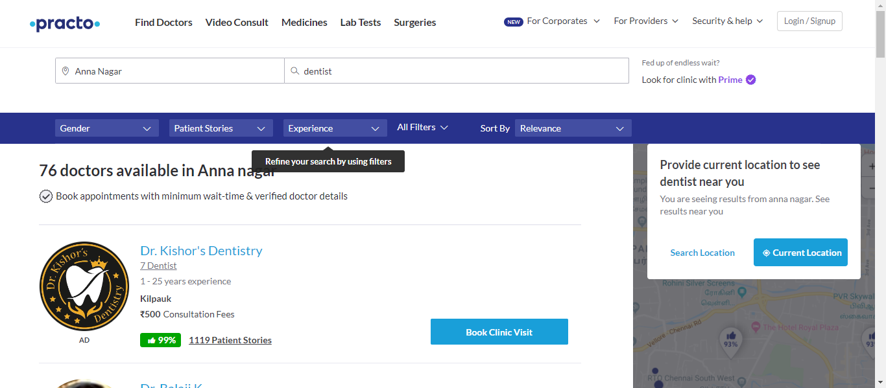Then verify if the area is selected: "You are seeing results from anna nagar. See results near you"com.practo.stepDefinitions.Hooks.addScreenshot(io.cucumber.java.Scenario)Filter doctors location in Chennai on the Search page
And user inputs "Dentist" in searchcom.practo.stepDefinitions.Hooks.addScreenshot(io.cucumber.java.Scenario)Filter doctors location in Chennai on the Search page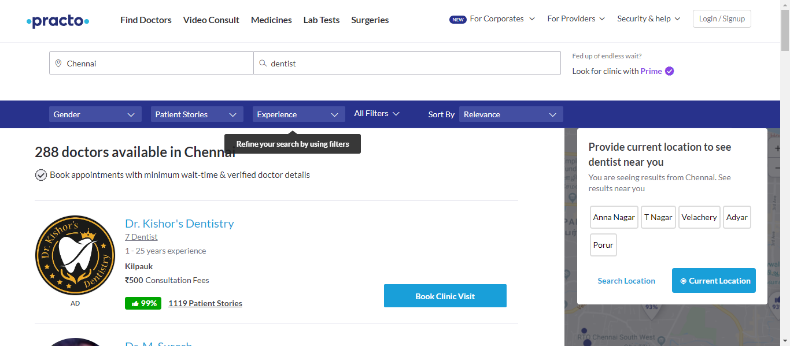And user clicks "Anna Nagar" under locationcom.practo.stepDefinitions.Hooks.addScreenshot(io.cucumber.java.Scenario)Filter doctors location in Chennai on the Search page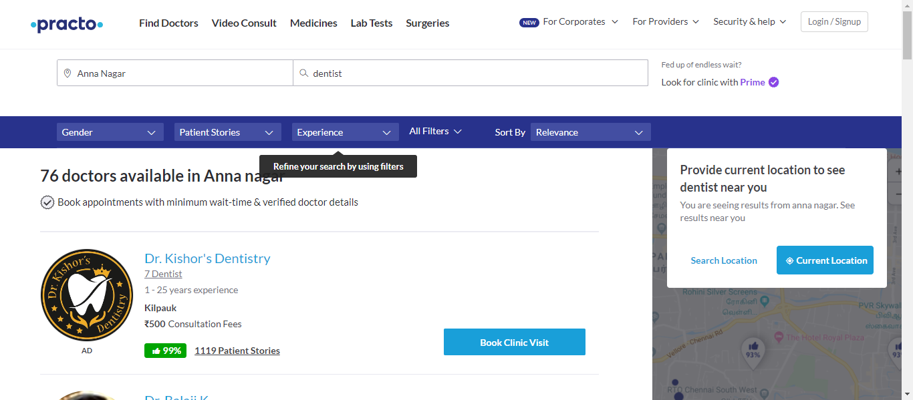Then verify if the area is selected: "You are seeing results from anna nagar. See results near you"com.practo.stepDefinitions.Hooks.addScreenshot(io.cucumber.java.Scenario)Filter doctors location in Chennai on the Search page
-
Surgeries
9:12:12 PM / 00:01:59:531 Pass
Surgeries
03.06.2024 9:12:12 PM 03.06.2024 9:14:12 PM 00:01:59:531 · #test-id=242PassVerify consultation form submission with correct details on the Surgeries pagePassVerify consultation form submission with correct details on the Surgeries pageGiven user navigates to Surgeries from home pagecom.practo.stepDefinitions.Hooks.addScreenshot(io.cucumber.java.Scenario)Verify consultation form submission with correct details on the Surgeries page When user selects "Bangalore" from the city dropdown on surgeriescom.practo.stepDefinitions.Hooks.addScreenshot(io.cucumber.java.Scenario)Verify consultation form submission with correct details on the Surgeries page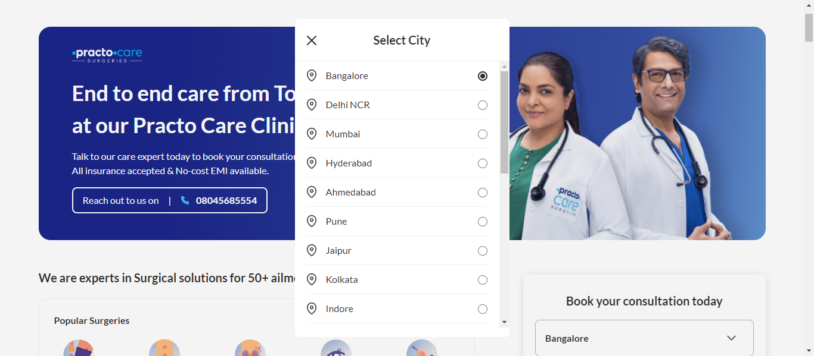And user selects "Carpal Tunnel Syndrome" from the ailment dropdowncom.practo.stepDefinitions.Hooks.addScreenshot(io.cucumber.java.Scenario)Verify consultation form submission with correct details on the Surgeries pageAnd user inputs "Vishal" in name on surgeriescom.practo.stepDefinitions.Hooks.addScreenshot(io.cucumber.java.Scenario)Verify consultation form submission with correct details on the Surgeries pageAnd user inputs "9879879877" in Contact Number on surgeriescom.practo.stepDefinitions.Hooks.addScreenshot(io.cucumber.java.Scenario)Verify consultation form submission with correct details on the Surgeries pageAnd click Book Appointment buttoncom.practo.stepDefinitions.Hooks.addScreenshot(io.cucumber.java.Scenario)Verify consultation form submission with correct details on the Surgeries page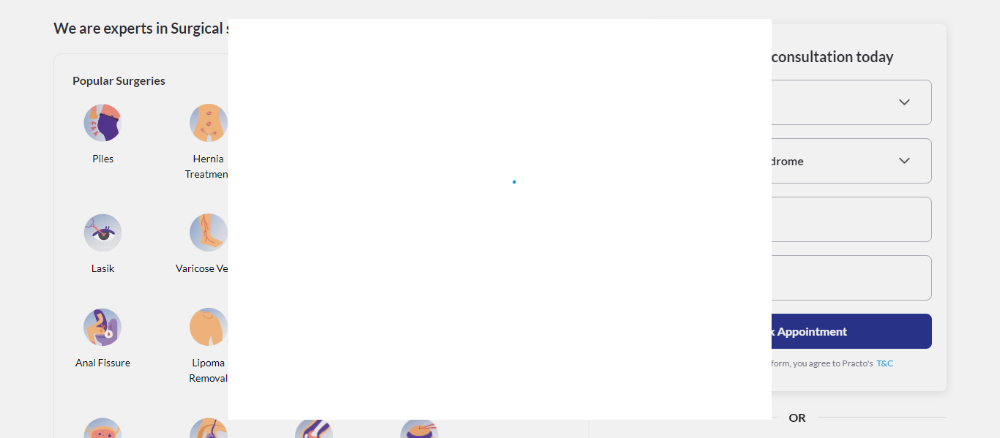Then capture mobile number in otp popupcom.practo.stepDefinitions.Hooks.addScreenshot(io.cucumber.java.Scenario)Verify consultation form submission with correct details on the Surgeries pagePassVerify consultation form submission with correct details on the Surgeries pageGiven user navigates to Surgeries from home pagecom.practo.stepDefinitions.Hooks.addScreenshot(io.cucumber.java.Scenario)Verify consultation form submission with correct details on the Surgeries page
When user selects "Bangalore" from the city dropdown on surgeriescom.practo.stepDefinitions.Hooks.addScreenshot(io.cucumber.java.Scenario)Verify consultation form submission with correct details on the Surgeries page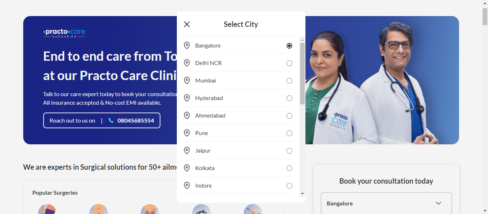And user selects "Carpal Tunnel Syndrome" from the ailment dropdowncom.practo.stepDefinitions.Hooks.addScreenshot(io.cucumber.java.Scenario)Verify consultation form submission with correct details on the Surgeries pageAnd user inputs "Vishal" in name on surgeriescom.practo.stepDefinitions.Hooks.addScreenshot(io.cucumber.java.Scenario)Verify consultation form submission with correct details on the Surgeries pageAnd user inputs "9879879877" in Contact Number on surgeriescom.practo.stepDefinitions.Hooks.addScreenshot(io.cucumber.java.Scenario)Verify consultation form submission with correct details on the Surgeries pageAnd click Book Appointment buttoncom.practo.stepDefinitions.Hooks.addScreenshot(io.cucumber.java.Scenario)Verify consultation form submission with correct details on the Surgeries page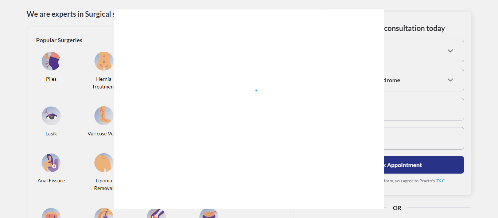Then capture mobile number in otp popupcom.practo.stepDefinitions.Hooks.addScreenshot(io.cucumber.java.Scenario)Verify consultation form submission with correct details on the Surgeries pagePassVerify consultation form submission with correct details on the Surgeries pageGiven user navigates to Surgeries from home pagecom.practo.stepDefinitions.Hooks.addScreenshot(io.cucumber.java.Scenario)Verify consultation form submission with correct details on the Surgeries page When user selects "Chennai" from the city dropdown on surgeriescom.practo.stepDefinitions.Hooks.addScreenshot(io.cucumber.java.Scenario)Verify consultation form submission with correct details on the Surgeries pageAnd user selects "ACL Repair" from the ailment dropdowncom.practo.stepDefinitions.Hooks.addScreenshot(io.cucumber.java.Scenario)Verify consultation form submission with correct details on the Surgeries pageAnd user inputs "Vardhan" in name on surgeriescom.practo.stepDefinitions.Hooks.addScreenshot(io.cucumber.java.Scenario)Verify consultation form submission with correct details on the Surgeries page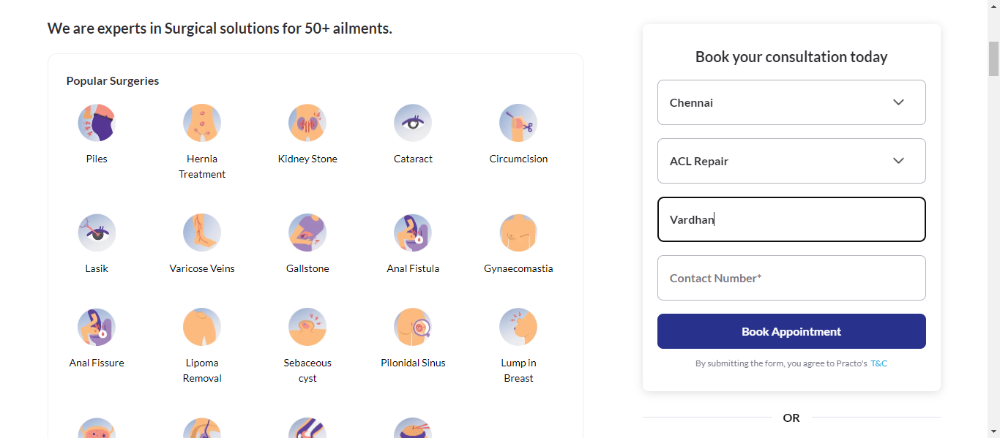And user inputs "9879879877" in Contact Number on surgeriescom.practo.stepDefinitions.Hooks.addScreenshot(io.cucumber.java.Scenario)Verify consultation form submission with correct details on the Surgeries pageAnd click Book Appointment buttoncom.practo.stepDefinitions.Hooks.addScreenshot(io.cucumber.java.Scenario)Verify consultation form submission with correct details on the Surgeries pageThen capture mobile number in otp popupcom.practo.stepDefinitions.Hooks.addScreenshot(io.cucumber.java.Scenario)Verify consultation form submission with correct details on the Surgeries pagePassVerify consultation form submission with wrong name on the Surgeries pagePassVerify consultation form submission with wrong name on the Surgeries pageGiven user navigates to Surgeries from home pagecom.practo.stepDefinitions.Hooks.addScreenshot(io.cucumber.java.Scenario)Verify consultation form submission with wrong name on the Surgeries page
When user selects "Chennai" from the city dropdown on surgeriescom.practo.stepDefinitions.Hooks.addScreenshot(io.cucumber.java.Scenario)Verify consultation form submission with correct details on the Surgeries pageAnd user selects "ACL Repair" from the ailment dropdowncom.practo.stepDefinitions.Hooks.addScreenshot(io.cucumber.java.Scenario)Verify consultation form submission with correct details on the Surgeries pageAnd user inputs "Vardhan" in name on surgeriescom.practo.stepDefinitions.Hooks.addScreenshot(io.cucumber.java.Scenario)Verify consultation form submission with correct details on the Surgeries page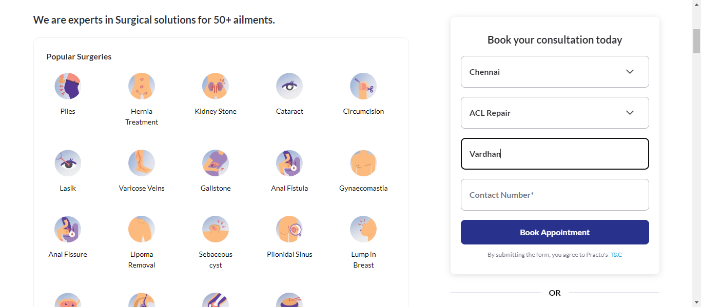And user inputs "9879879877" in Contact Number on surgeriescom.practo.stepDefinitions.Hooks.addScreenshot(io.cucumber.java.Scenario)Verify consultation form submission with correct details on the Surgeries pageAnd click Book Appointment buttoncom.practo.stepDefinitions.Hooks.addScreenshot(io.cucumber.java.Scenario)Verify consultation form submission with correct details on the Surgeries pageThen capture mobile number in otp popupcom.practo.stepDefinitions.Hooks.addScreenshot(io.cucumber.java.Scenario)Verify consultation form submission with correct details on the Surgeries pagePassVerify consultation form submission with wrong name on the Surgeries pagePassVerify consultation form submission with wrong name on the Surgeries pageGiven user navigates to Surgeries from home pagecom.practo.stepDefinitions.Hooks.addScreenshot(io.cucumber.java.Scenario)Verify consultation form submission with wrong name on the Surgeries page When user selects "Chennai" from the city dropdown on surgeriescom.practo.stepDefinitions.Hooks.addScreenshot(io.cucumber.java.Scenario)Verify consultation form submission with wrong name on the Surgeries pageAnd user selects "ACL Repair" from the ailment dropdowncom.practo.stepDefinitions.Hooks.addScreenshot(io.cucumber.java.Scenario)Verify consultation form submission with wrong name on the Surgeries page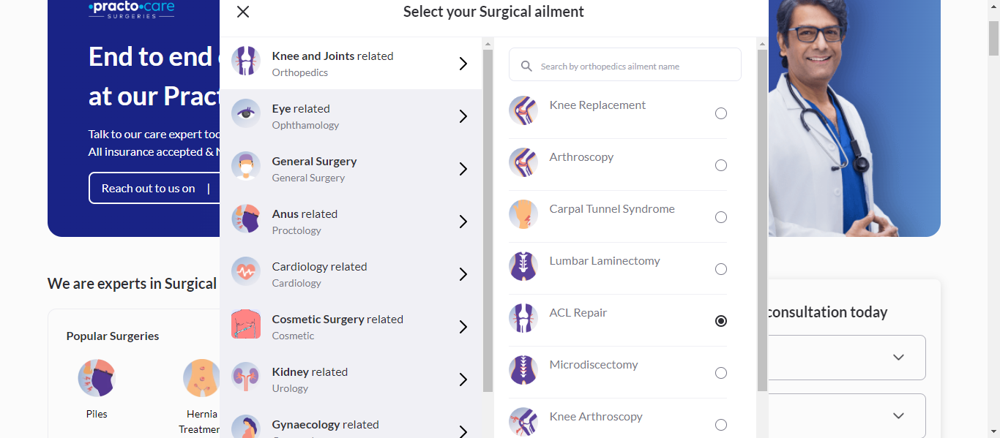And user inputs "Am" in name on surgeriescom.practo.stepDefinitions.Hooks.addScreenshot(io.cucumber.java.Scenario)Verify consultation form submission with wrong name on the Surgeries pageAnd user inputs "8123123123" in Contact Number on surgeriescom.practo.stepDefinitions.Hooks.addScreenshot(io.cucumber.java.Scenario)Verify consultation form submission with wrong name on the Surgeries pageThen capture error message displayed below namecom.practo.stepDefinitions.Hooks.addScreenshot(io.cucumber.java.Scenario)Verify consultation form submission with wrong name on the Surgeries page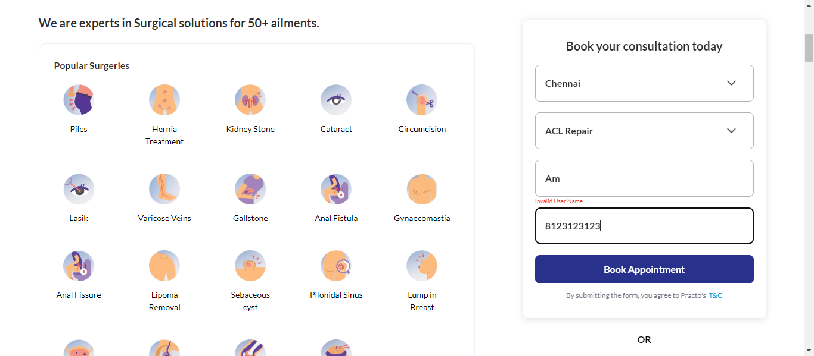PassVerify consultation form submission with wrong contact number on the Surgeries pagePassVerify consultation form submission with wrong contact number on the Surgeries pageGiven user navigates to Surgeries from home pagecom.practo.stepDefinitions.Hooks.addScreenshot(io.cucumber.java.Scenario)Verify consultation form submission with wrong contact number on the Surgeries page
When user selects "Chennai" from the city dropdown on surgeriescom.practo.stepDefinitions.Hooks.addScreenshot(io.cucumber.java.Scenario)Verify consultation form submission with wrong name on the Surgeries pageAnd user selects "ACL Repair" from the ailment dropdowncom.practo.stepDefinitions.Hooks.addScreenshot(io.cucumber.java.Scenario)Verify consultation form submission with wrong name on the Surgeries page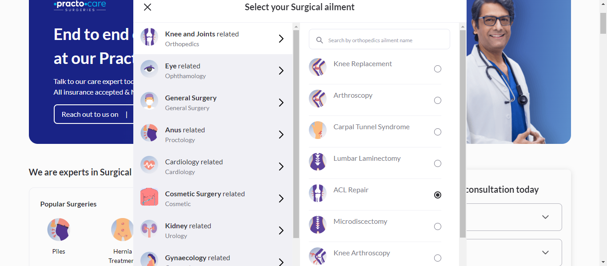And user inputs "Am" in name on surgeriescom.practo.stepDefinitions.Hooks.addScreenshot(io.cucumber.java.Scenario)Verify consultation form submission with wrong name on the Surgeries pageAnd user inputs "8123123123" in Contact Number on surgeriescom.practo.stepDefinitions.Hooks.addScreenshot(io.cucumber.java.Scenario)Verify consultation form submission with wrong name on the Surgeries pageThen capture error message displayed below namecom.practo.stepDefinitions.Hooks.addScreenshot(io.cucumber.java.Scenario)Verify consultation form submission with wrong name on the Surgeries page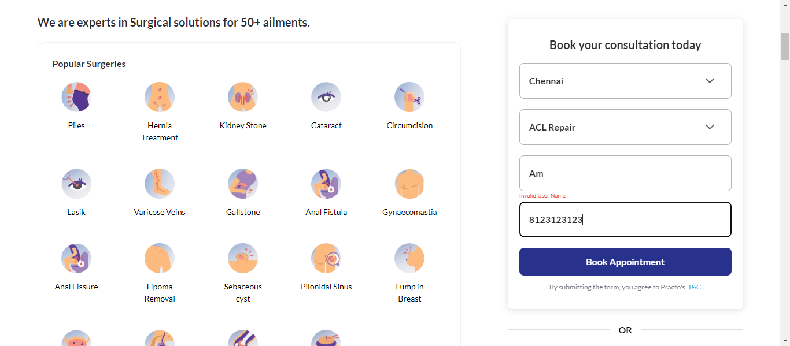PassVerify consultation form submission with wrong contact number on the Surgeries pagePassVerify consultation form submission with wrong contact number on the Surgeries pageGiven user navigates to Surgeries from home pagecom.practo.stepDefinitions.Hooks.addScreenshot(io.cucumber.java.Scenario)Verify consultation form submission with wrong contact number on the Surgeries page When user selects "Chennai" from the city dropdown on surgeriescom.practo.stepDefinitions.Hooks.addScreenshot(io.cucumber.java.Scenario)Verify consultation form submission with wrong contact number on the Surgeries pageAnd user selects "Carpal Tunnel Syndrome" from the ailment dropdowncom.practo.stepDefinitions.Hooks.addScreenshot(io.cucumber.java.Scenario)Verify consultation form submission with wrong contact number on the Surgeries pageAnd user inputs "Vardhan" in name on surgeriescom.practo.stepDefinitions.Hooks.addScreenshot(io.cucumber.java.Scenario)Verify consultation form submission with wrong contact number on the Surgeries page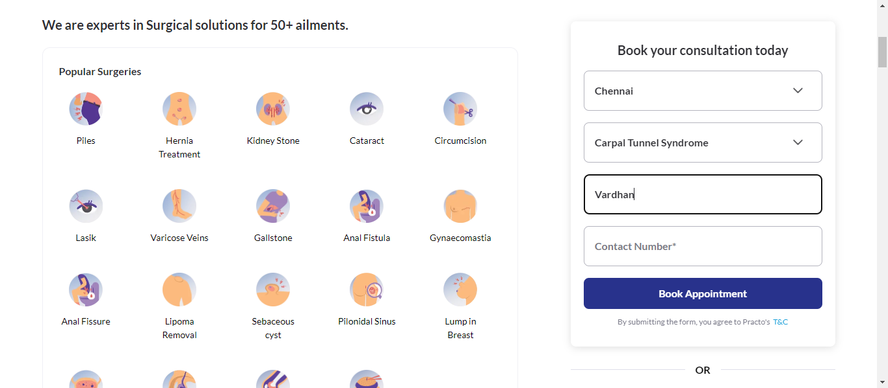And user inputs "898989898" in Contact Number on surgeriescom.practo.stepDefinitions.Hooks.addScreenshot(io.cucumber.java.Scenario)Verify consultation form submission with wrong contact number on the Surgeries pageThen capture error message displayed below contact numbercom.practo.stepDefinitions.Hooks.addScreenshot(io.cucumber.java.Scenario)Verify consultation form submission with wrong contact number on the Surgeries pagePassVerify consultation form submission with wrong name and contact number on the Surgeries pagePassVerify consultation form submission with wrong name and contact number on the Surgeries pageGiven user navigates to Surgeries from home pagecom.practo.stepDefinitions.Hooks.addScreenshot(io.cucumber.java.Scenario)Verify consultation form submission with wrong name and contact number on the Surgeries page
When user selects "Chennai" from the city dropdown on surgeriescom.practo.stepDefinitions.Hooks.addScreenshot(io.cucumber.java.Scenario)Verify consultation form submission with wrong contact number on the Surgeries pageAnd user selects "Carpal Tunnel Syndrome" from the ailment dropdowncom.practo.stepDefinitions.Hooks.addScreenshot(io.cucumber.java.Scenario)Verify consultation form submission with wrong contact number on the Surgeries pageAnd user inputs "Vardhan" in name on surgeriescom.practo.stepDefinitions.Hooks.addScreenshot(io.cucumber.java.Scenario)Verify consultation form submission with wrong contact number on the Surgeries page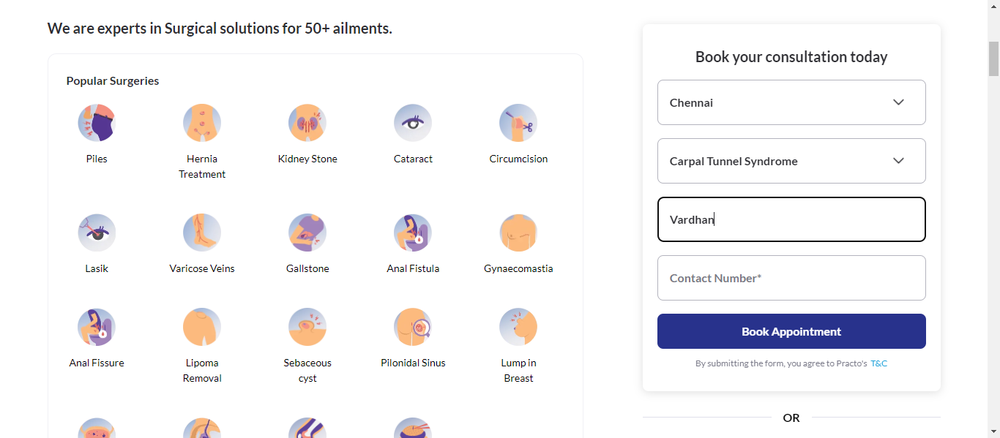And user inputs "898989898" in Contact Number on surgeriescom.practo.stepDefinitions.Hooks.addScreenshot(io.cucumber.java.Scenario)Verify consultation form submission with wrong contact number on the Surgeries pageThen capture error message displayed below contact numbercom.practo.stepDefinitions.Hooks.addScreenshot(io.cucumber.java.Scenario)Verify consultation form submission with wrong contact number on the Surgeries pagePassVerify consultation form submission with wrong name and contact number on the Surgeries pagePassVerify consultation form submission with wrong name and contact number on the Surgeries pageGiven user navigates to Surgeries from home pagecom.practo.stepDefinitions.Hooks.addScreenshot(io.cucumber.java.Scenario)Verify consultation form submission with wrong name and contact number on the Surgeries page When user selects "Bangalore" from the city dropdown on surgeriescom.practo.stepDefinitions.Hooks.addScreenshot(io.cucumber.java.Scenario)Verify consultation form submission with wrong name and contact number on the Surgeries pageAnd user selects "Carpal Tunnel Syndrome" from the ailment dropdowncom.practo.stepDefinitions.Hooks.addScreenshot(io.cucumber.java.Scenario)Verify consultation form submission with wrong name and contact number on the Surgeries page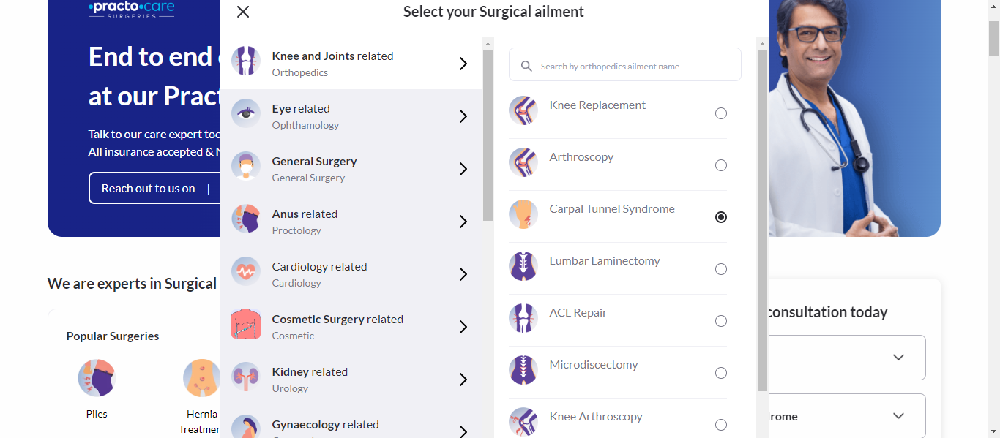And user inputs "Sa" in name on surgeriescom.practo.stepDefinitions.Hooks.addScreenshot(io.cucumber.java.Scenario)Verify consultation form submission with wrong name and contact number on the Surgeries page
When user selects "Bangalore" from the city dropdown on surgeriescom.practo.stepDefinitions.Hooks.addScreenshot(io.cucumber.java.Scenario)Verify consultation form submission with wrong name and contact number on the Surgeries pageAnd user selects "Carpal Tunnel Syndrome" from the ailment dropdowncom.practo.stepDefinitions.Hooks.addScreenshot(io.cucumber.java.Scenario)Verify consultation form submission with wrong name and contact number on the Surgeries page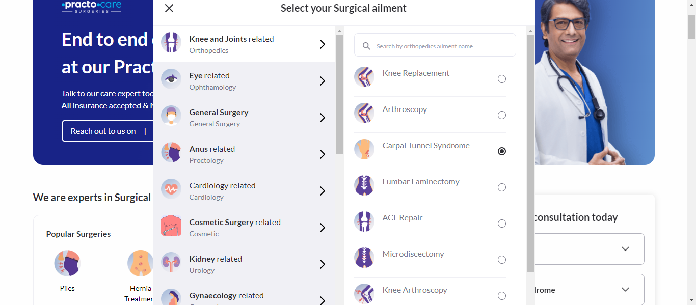And user inputs "Sa" in name on surgeriescom.practo.stepDefinitions.Hooks.addScreenshot(io.cucumber.java.Scenario)Verify consultation form submission with wrong name and contact number on the Surgeries page And user inputs "1231231231" in Contact Number on surgeriescom.practo.stepDefinitions.Hooks.addScreenshot(io.cucumber.java.Scenario)Verify consultation form submission with wrong name and contact number on the Surgeries pageThen capture error message displayed below namecom.practo.stepDefinitions.Hooks.addScreenshot(io.cucumber.java.Scenario)Verify consultation form submission with wrong name and contact number on the Surgeries page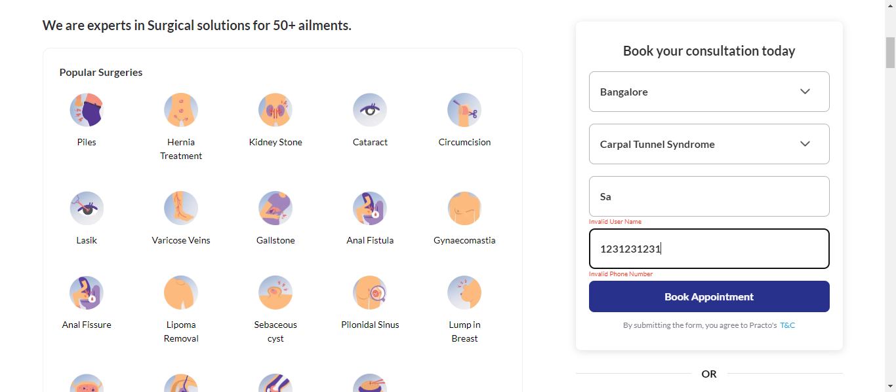Then capture error message displayed below contact numbercom.practo.stepDefinitions.Hooks.addScreenshot(io.cucumber.java.Scenario)Verify consultation form submission with wrong name and contact number on the Surgeries pagePassVerify surgeries form popup message on the Surgeries pagePassVerify surgeries form popup message on the Surgeries pageGiven user navigates to Surgeries from home pagecom.practo.stepDefinitions.Hooks.addScreenshot(io.cucumber.java.Scenario)Verify surgeries form popup message on the Surgeries page
And user inputs "1231231231" in Contact Number on surgeriescom.practo.stepDefinitions.Hooks.addScreenshot(io.cucumber.java.Scenario)Verify consultation form submission with wrong name and contact number on the Surgeries pageThen capture error message displayed below namecom.practo.stepDefinitions.Hooks.addScreenshot(io.cucumber.java.Scenario)Verify consultation form submission with wrong name and contact number on the Surgeries page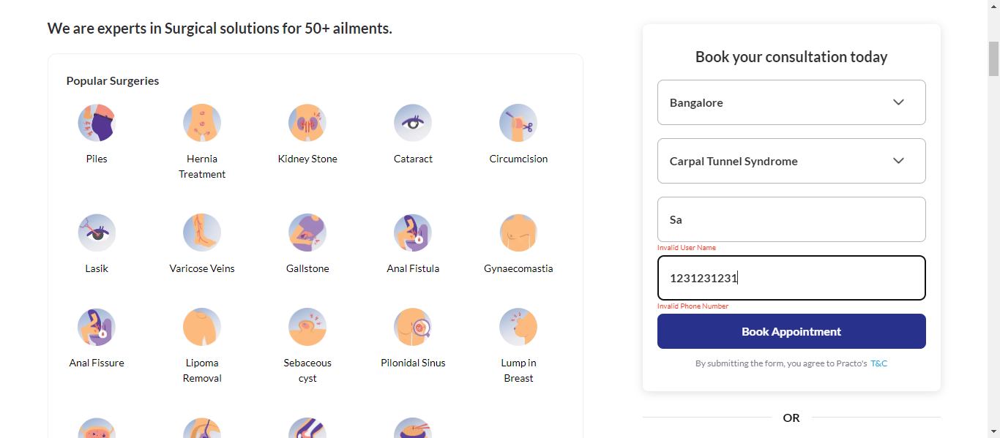Then capture error message displayed below contact numbercom.practo.stepDefinitions.Hooks.addScreenshot(io.cucumber.java.Scenario)Verify consultation form submission with wrong name and contact number on the Surgeries pagePassVerify surgeries form popup message on the Surgeries pagePassVerify surgeries form popup message on the Surgeries pageGiven user navigates to Surgeries from home pagecom.practo.stepDefinitions.Hooks.addScreenshot(io.cucumber.java.Scenario)Verify surgeries form popup message on the Surgeries page When user clicks on "Cataract" under Popular Surgeriescom.practo.stepDefinitions.Hooks.addScreenshot(io.cucumber.java.Scenario)Verify surgeries form popup message on the Surgeries page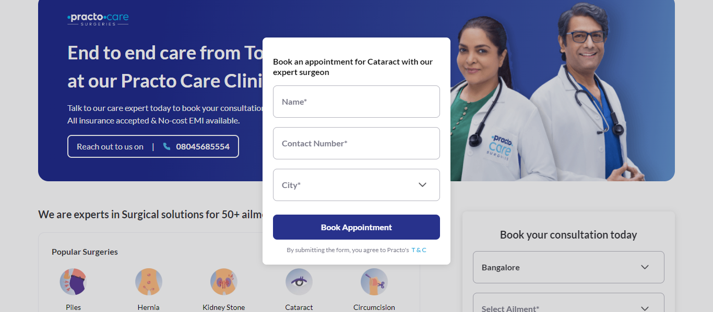Then verify the message displayed above the surgery form contains "Cataract"com.practo.stepDefinitions.Hooks.addScreenshot(io.cucumber.java.Scenario)Verify surgeries form popup message on the Surgeries page
When user clicks on "Cataract" under Popular Surgeriescom.practo.stepDefinitions.Hooks.addScreenshot(io.cucumber.java.Scenario)Verify surgeries form popup message on the Surgeries page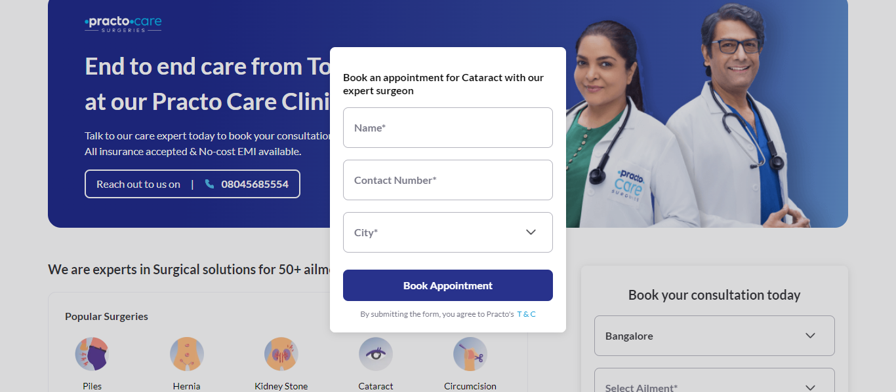Then verify the message displayed above the surgery form contains "Cataract"com.practo.stepDefinitions.Hooks.addScreenshot(io.cucumber.java.Scenario)Verify surgeries form popup message on the Surgeries page PassVerify surgeries form popup message on the Surgeries pageGiven user navigates to Surgeries from home pagecom.practo.stepDefinitions.Hooks.addScreenshot(io.cucumber.java.Scenario)Verify surgeries form popup message on the Surgeries page
PassVerify surgeries form popup message on the Surgeries pageGiven user navigates to Surgeries from home pagecom.practo.stepDefinitions.Hooks.addScreenshot(io.cucumber.java.Scenario)Verify surgeries form popup message on the Surgeries page When user clicks on "Kidney Stone" under Popular Surgeriescom.practo.stepDefinitions.Hooks.addScreenshot(io.cucumber.java.Scenario)Verify surgeries form popup message on the Surgeries pageThen verify the message displayed above the surgery form contains "Kidney Stone"com.practo.stepDefinitions.Hooks.addScreenshot(io.cucumber.java.Scenario)Verify surgeries form popup message on the Surgeries pagePassVerify surgeries form submission with correct details on the Surgeries pagePassVerify surgeries form submission with correct details on the Surgeries pageGiven user navigates to Surgeries from home pagecom.practo.stepDefinitions.Hooks.addScreenshot(io.cucumber.java.Scenario)Verify surgeries form submission with correct details on the Surgeries page
When user clicks on "Kidney Stone" under Popular Surgeriescom.practo.stepDefinitions.Hooks.addScreenshot(io.cucumber.java.Scenario)Verify surgeries form popup message on the Surgeries pageThen verify the message displayed above the surgery form contains "Kidney Stone"com.practo.stepDefinitions.Hooks.addScreenshot(io.cucumber.java.Scenario)Verify surgeries form popup message on the Surgeries pagePassVerify surgeries form submission with correct details on the Surgeries pagePassVerify surgeries form submission with correct details on the Surgeries pageGiven user navigates to Surgeries from home pagecom.practo.stepDefinitions.Hooks.addScreenshot(io.cucumber.java.Scenario)Verify surgeries form submission with correct details on the Surgeries page When user clicks on "Cataract" under Popular Surgeriescom.practo.stepDefinitions.Hooks.addScreenshot(io.cucumber.java.Scenario)Verify surgeries form submission with correct details on the Surgeries page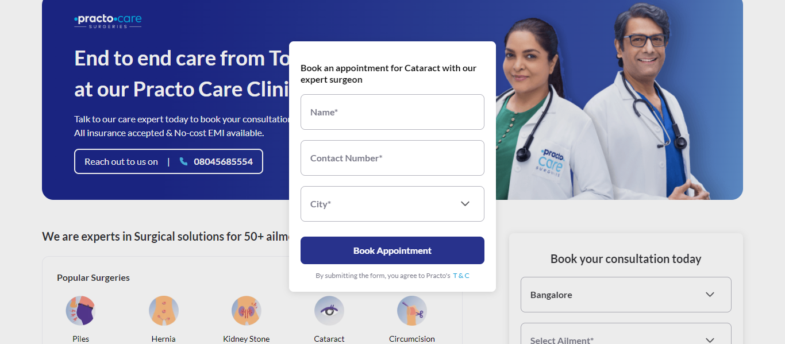And enter "Vishal" in name in popular surgery formcom.practo.stepDefinitions.Hooks.addScreenshot(io.cucumber.java.Scenario)Verify surgeries form submission with correct details on the Surgeries page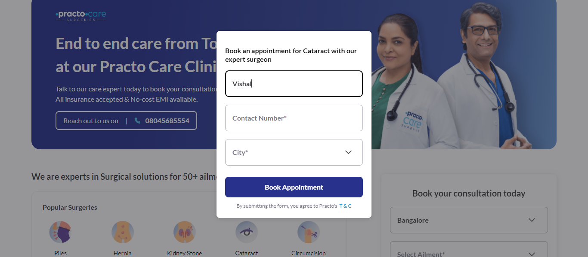And enter "9879879877" in contact number in popular surgery formcom.practo.stepDefinitions.Hooks.addScreenshot(io.cucumber.java.Scenario)Verify surgeries form submission with correct details on the Surgeries pageAnd select "Bangalore" in the city dropdown in popular surgery formcom.practo.stepDefinitions.Hooks.addScreenshot(io.cucumber.java.Scenario)Verify surgeries form submission with correct details on the Surgeries page
When user clicks on "Cataract" under Popular Surgeriescom.practo.stepDefinitions.Hooks.addScreenshot(io.cucumber.java.Scenario)Verify surgeries form submission with correct details on the Surgeries page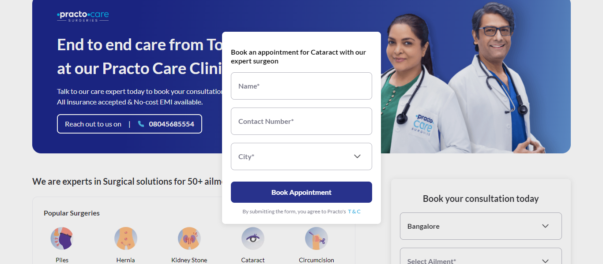And enter "Vishal" in name in popular surgery formcom.practo.stepDefinitions.Hooks.addScreenshot(io.cucumber.java.Scenario)Verify surgeries form submission with correct details on the Surgeries page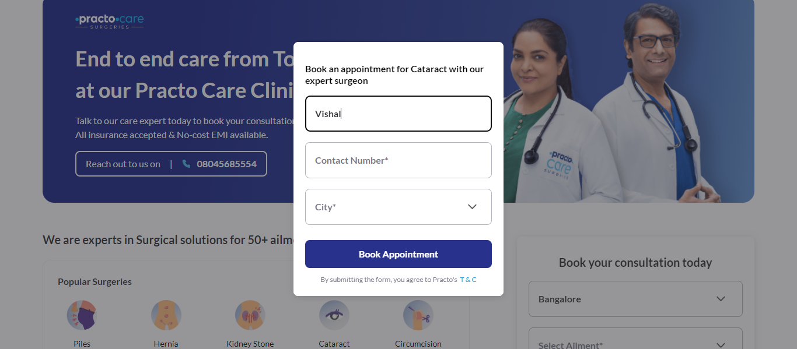And enter "9879879877" in contact number in popular surgery formcom.practo.stepDefinitions.Hooks.addScreenshot(io.cucumber.java.Scenario)Verify surgeries form submission with correct details on the Surgeries pageAnd select "Bangalore" in the city dropdown in popular surgery formcom.practo.stepDefinitions.Hooks.addScreenshot(io.cucumber.java.Scenario)Verify surgeries form submission with correct details on the Surgeries page And user clicks on Book Appointment button in popular surgery formcom.practo.stepDefinitions.Hooks.addScreenshot(io.cucumber.java.Scenario)Verify surgeries form submission with correct details on the Surgeries pageThen capture mobile number in otp popupcom.practo.stepDefinitions.Hooks.addScreenshot(io.cucumber.java.Scenario)Verify surgeries form submission with correct details on the Surgeries pagePassVerify surgeries form submission with incorrect details on the Surgeries pagePassVerify surgeries form submission with incorrect details on the Surgeries pageGiven user navigates to Surgeries from home pagecom.practo.stepDefinitions.Hooks.addScreenshot(io.cucumber.java.Scenario)Verify surgeries form submission with incorrect details on the Surgeries page
And user clicks on Book Appointment button in popular surgery formcom.practo.stepDefinitions.Hooks.addScreenshot(io.cucumber.java.Scenario)Verify surgeries form submission with correct details on the Surgeries pageThen capture mobile number in otp popupcom.practo.stepDefinitions.Hooks.addScreenshot(io.cucumber.java.Scenario)Verify surgeries form submission with correct details on the Surgeries pagePassVerify surgeries form submission with incorrect details on the Surgeries pagePassVerify surgeries form submission with incorrect details on the Surgeries pageGiven user navigates to Surgeries from home pagecom.practo.stepDefinitions.Hooks.addScreenshot(io.cucumber.java.Scenario)Verify surgeries form submission with incorrect details on the Surgeries page When user clicks on "Cataract" under Popular Surgeriescom.practo.stepDefinitions.Hooks.addScreenshot(io.cucumber.java.Scenario)Verify surgeries form submission with incorrect details on the Surgeries pageAnd enter "V" in name in popular surgery formcom.practo.stepDefinitions.Hooks.addScreenshot(io.cucumber.java.Scenario)Verify surgeries form submission with incorrect details on the Surgeries page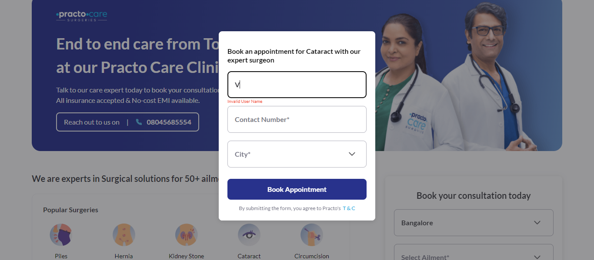And enter "98798798" in contact number in popular surgery formcom.practo.stepDefinitions.Hooks.addScreenshot(io.cucumber.java.Scenario)Verify surgeries form submission with incorrect details on the Surgeries page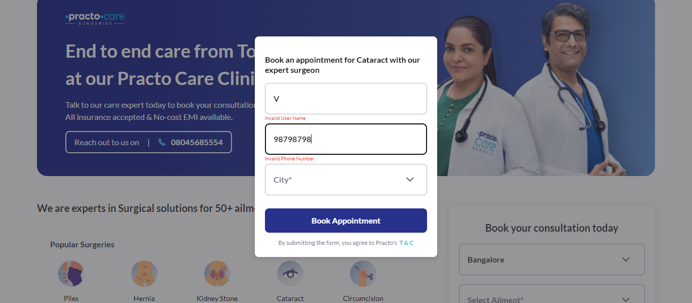And select "Bangalore" in the city dropdown in popular surgery formcom.practo.stepDefinitions.Hooks.addScreenshot(io.cucumber.java.Scenario)Verify surgeries form submission with incorrect details on the Surgeries page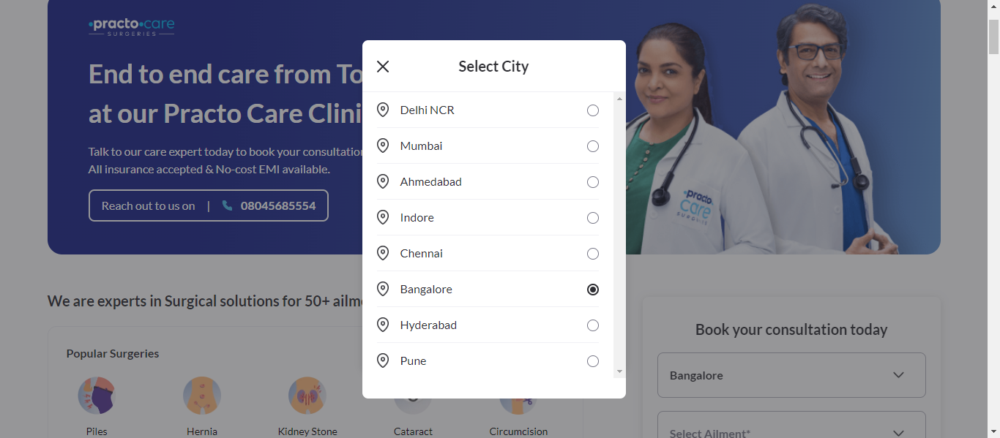Then capture error message displayed below namecom.practo.stepDefinitions.Hooks.addScreenshot(io.cucumber.java.Scenario)Verify surgeries form submission with incorrect details on the Surgeries pageThen capture error message displayed below contact numbercom.practo.stepDefinitions.Hooks.addScreenshot(io.cucumber.java.Scenario)Verify surgeries form submission with incorrect details on the Surgeries page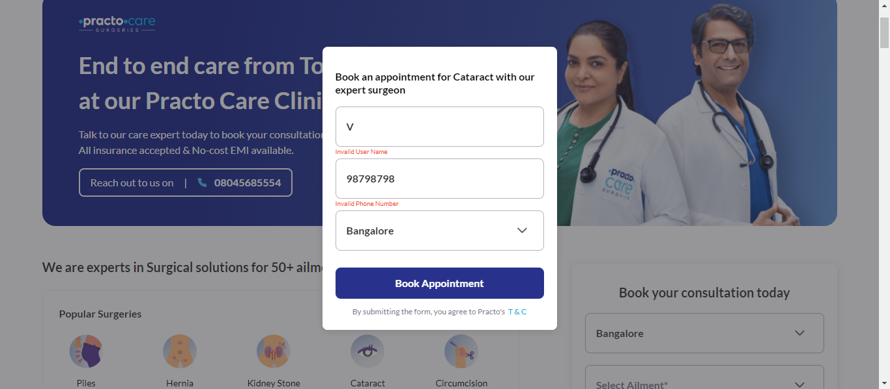
When user clicks on "Cataract" under Popular Surgeriescom.practo.stepDefinitions.Hooks.addScreenshot(io.cucumber.java.Scenario)Verify surgeries form submission with incorrect details on the Surgeries pageAnd enter "V" in name in popular surgery formcom.practo.stepDefinitions.Hooks.addScreenshot(io.cucumber.java.Scenario)Verify surgeries form submission with incorrect details on the Surgeries page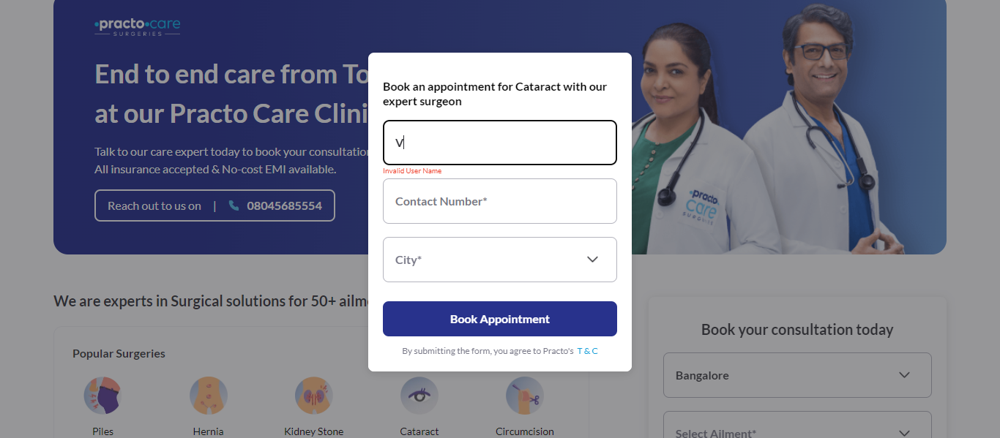And enter "98798798" in contact number in popular surgery formcom.practo.stepDefinitions.Hooks.addScreenshot(io.cucumber.java.Scenario)Verify surgeries form submission with incorrect details on the Surgeries page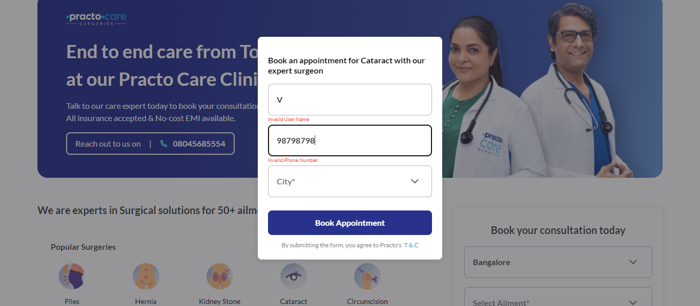And select "Bangalore" in the city dropdown in popular surgery formcom.practo.stepDefinitions.Hooks.addScreenshot(io.cucumber.java.Scenario)Verify surgeries form submission with incorrect details on the Surgeries page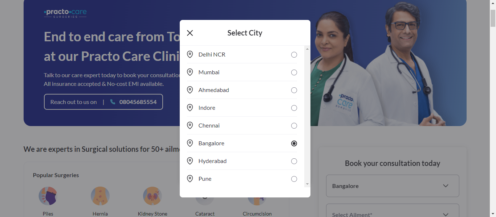Then capture error message displayed below namecom.practo.stepDefinitions.Hooks.addScreenshot(io.cucumber.java.Scenario)Verify surgeries form submission with incorrect details on the Surgeries pageThen capture error message displayed below contact numbercom.practo.stepDefinitions.Hooks.addScreenshot(io.cucumber.java.Scenario)Verify surgeries form submission with incorrect details on the Surgeries page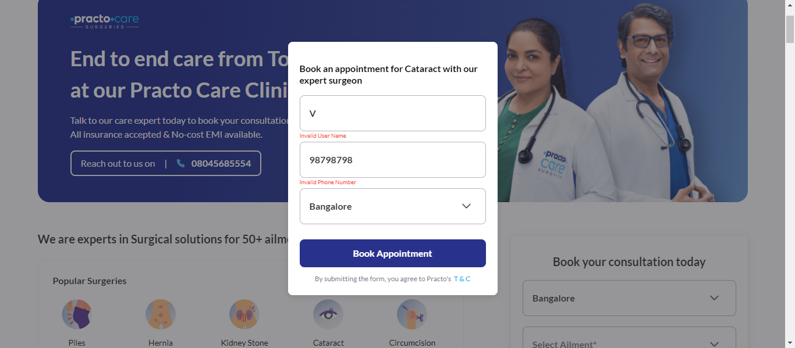
-
@smoke
12 tests
@smoke
12 passedStatus Timestamp TestName Pass 21:08:40 PM verify Schedule a demo scroll-to-top navigation button on the Health and Wellness Page Health and Wellness.verify Schedule a demo scroll-to-top navigation button on the Health and Wellness PagePass 21:08:54 PM verify if the submit button is disabled with incorrect details on the Health and Wellness Page Health and Wellness.verify if the submit button is disabled with incorrect details on the Health and Wellness PagePass 21:09:09 PM verify if the submit button is disabled with incorrect details on the Health and Wellness Page Health and Wellness.verify if the submit button is disabled with incorrect details on the Health and Wellness PagePass 21:09:26 PM verify if submit button enabled with correct details on the Health and Wellness Plan page Health and Wellness.verify if submit button enabled with correct details on the Health and Wellness Plan pagePass 21:09:42 PM Verify navigation items on the Home Page Home Page.Verify navigation items on the Home PagePass 21:09:51 PM Verify navigation items on the Home Page Home Page.Verify navigation items on the Home PagePass 21:10:05 PM Verify navigation items on the Home Page Home Page.Verify navigation items on the Home PagePass 21:12:12 PM Verify consultation form submission with correct details on the Surgeries page Surgeries.Verify consultation form submission with correct details on the Surgeries pagePass 21:12:27 PM Verify consultation form submission with correct details on the Surgeries page Surgeries.Verify consultation form submission with correct details on the Surgeries pagePass 21:12:43 PM Verify consultation form submission with wrong name on the Surgeries page Surgeries.Verify consultation form submission with wrong name on the Surgeries pagePass 21:12:56 PM Verify consultation form submission with wrong contact number on the Surgeries page Surgeries.Verify consultation form submission with wrong contact number on the Surgeries pagePass 21:13:09 PM Verify consultation form submission with wrong name and contact number on the Surgeries page Surgeries.Verify consultation form submission with wrong name and contact number on the Surgeries page -
@test
3 tests
@test
3 passedStatus Timestamp TestName Pass 21:07:30 PM Search for doctors using the specified filters and accquire top five results End to End happy flow execution.Search for doctors using the specified filters and accquire top five resultsPass 21:08:09 PM Extract the surgeries listed as Popular Surgeries on the Surgeries page End to End happy flow execution.Extract the surgeries listed as Popular Surgeries on the Surgeries pagePass 21:08:24 PM verify form submission with correct details by capturing Thank You message on the Health and Wellness page End to End happy flow execution.verify form submission with correct details by capturing Thank You message on the Health and Wellness page -
@regression
10 tests
@regression
10 passedStatus Timestamp TestName Pass 21:08:24 PM verify form submission with correct details by capturing Thank You message on the Health and Wellness page End to End happy flow execution.verify form submission with correct details by capturing Thank You message on the Health and Wellness pagePass 21:10:18 PM Filter doctors by patient stories on the Search page Search.Filter doctors by patient stories on the Search pagePass 21:10:50 PM Filter doctors by fees on the Search page Search.Filter doctors by fees on the Search pagePass 21:11:12 PM Filter doctors by availability on the Search page Search.Filter doctors by availability on the Search pagePass 21:11:35 PM Filter doctors by video consult availability on the Search page Search.Filter doctors by video consult availability on the Search pagePass 21:11:54 PM Filter doctors location in Chennai on the Search page Search.Filter doctors location in Chennai on the Search pagePass 21:13:23 PM Verify surgeries form popup message on the Surgeries page Surgeries.Verify surgeries form popup message on the Surgeries pagePass 21:13:33 PM Verify surgeries form popup message on the Surgeries page Surgeries.Verify surgeries form popup message on the Surgeries pagePass 21:13:44 PM Verify surgeries form submission with correct details on the Surgeries page Surgeries.Verify surgeries form submission with correct details on the Surgeries pagePass 21:13:59 PM Verify surgeries form submission with incorrect details on the Surgeries page Surgeries.Verify surgeries form submission with incorrect details on the Surgeries page
Started
Mar 6, 2024 09:07:29 PM
Ended
Mar 6, 2024 09:14:12 PM
Features Passed
5
Features Failed
0
Features
Scenarios
Steps
Timeline
Tags
| Name | Passed | Failed | Skipped | Others | Passed % |
|---|---|---|---|---|---|
| @smoke | 12 | 0 | 0 | 0 | 100% |
| @test | 3 | 0 | 0 | 0 | 100% |
| @regression | 10 | 0 | 0 | 0 | 100% |